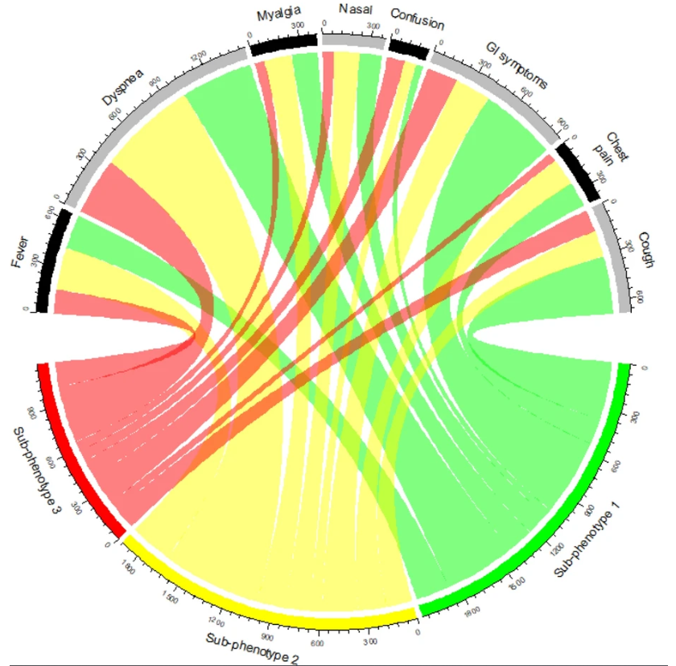

As variáveis qualitativas (ou categóricas) são aquelas que representam categorias ou grupos, em vez de valores numéricos contínuos. Elas podem indicar, por exemplo, o sexo, a cor dos olhos, a faixa etária ou a região geográfica de um conjunto de observações. Em estatística, esse tipo de variável é fundamental para a análise de proporções, frequências e comparações entre grupos. Neste capítulo, vamos explorar formas gráficas de representação adequadas para este tipo de variável.
Para este capítulo, serão necessários os seguintes pacotes:
Código
library(openxlsx) # Leitura de bases de dados library(ggplot2) # Gráficoslibrary(forcats) # Edição de gráficos library(ggstats) # Adição de porcentagens nos gráficoslibrary(ggmosaic) # Gráfico mosaicolibrary(dplyr) # Manipulação de bases de dadoslibrary(webr) # Gráfico donutlibrary(scales) # Ajuda a trabalhar as escalas dos gráficoslibrary(likert) # Para fazer o gráfico likertlibrary(fmsb) # Para fazer o gráfico radarlibrary(treemapify) # Para fazer o gráfico treemaplibrary(tidyr) # Manipulação de bases de dadoslibrary(ggalluvial) # Para fazer o gráfico alluviallibrary(circlize) # Para fazer o gráfico chordlibrary(viridis) # Paleta de coreslibrary(RColorBrewer) # Paleta de cores
7.2SITUAÇÃO PRÁTICA MOTIVADORA
Neste tópico, utilizaremos uma base de dados amplamente difundida em plataformas de ciência de dados, especialmente no Kaggle, voltada para o estudo da satisfação de passageiros de companhias aéreas.
A base foi construída com o objetivo de representar um cenário típico de avaliação da experiência de clientes no transporte aéreo.
Cada observação corresponde a um passageiro
O foco central é a percepção do cliente sobre o serviço prestado
Os dados refletem situações comuns enfrentadas em voos comerciais
É importante destacar a natureza desta base:
Trata-se de uma base de uso educacional e para modelagem
Os dados são realistas, isto é:
seguem padrões plausíveis do mundo real
reproduzem estruturas comuns em pesquisas de satisfação
Por outro lado:
Não há documentação completa sobre:
processo de amostragem
instituição responsável pela coleta
companhia aérea específica envolvida
Diante disso, devemos encarar esta base como:
✔️ Uma representação consistente e útil de um problema real
✔️ Adequada para:
exploração de dados
construção de modelos
aprendizado de técnicas estatísticas
Para hoje, selecionei 200 pessoas que foram entrevistadas com respeito às seguintes variáveis:
Variáveis Resposta (Satisfação do Cliente)
Variavel
Significado
Categorias
WiFi
Satisfação com o serviço de Wi-Fi durante o voo
Satisfeito / Neutro / Insatisfeito
Partida_Chegada
Satisfação com os horários de partida e chegada
Satisfeito / Neutro / Insatisfeito
Local_Portao
Satisfação com a localização do portão
Satisfeito / Neutro / Insatisfeito
Comida_Bebida
Satisfação com comidas e bebidas
Satisfeito / Neutro / Insatisfeito
Servico_Online
Satisfação com os serviços online
Satisfeito / Neutro / Insatisfeito
Conforto_Assento
Satisfação com o conforto do assento
Satisfeito / Neutro / Insatisfeito
Entretenimento_Voo
Satisfação com o entretenimento a bordo
Satisfeito / Neutro / Insatisfeito
Servico_Bordo
Satisfação com o atendimento durante o voo
Satisfeito / Neutro / Insatisfeito
Bagagem
Satisfação com o serviço de bagagens
Satisfeito / Neutro / Insatisfeito
Checkin.service
Satisfação com o processo de check-in
Satisfeito / Neutro / Insatisfeito
Limpeza
Satisfação com a limpeza da aeronave
Satisfeito / Neutro / Insatisfeito
Fatores de Exposição
Variavel
Significado
Categorias
Genero
Sexo do passageiro
Masculino / Feminino
Cliente
Tipo de cliente (fidelidade)
Cliente Fiel / Cliente Não Fiel
Idade
Idade do(a) passageiro(a)
Anos completos
Tipo_Viagem
Motivo da viagem
Negócios / Pessoal
Classe
Classe do voo
Executiva / Econômica / Econômica Plus
Distancia
Distância percorrida no voo
Quilômetros (Km)
Atraso_Partida
Atraso na partida
Minutos completos
Atraso_Chegada
Atraso na chegada
Minutos completos
A base de dados está armazenada no arquivo DadosAviao.xlsx. Para ler a base de dados, utilize os seguintes comandos:
Código
Dados =read.xlsx("DadosAviao.xlsx")
7.3GRÁFICO DE BARRAS
Os gráficos de barras são usados quando queremos comparar quantidades entre categorias.
Cada barra representa uma categoria.
As barras são espaçadas.
O tamanho (altura ou comprimento) da barra mostra a frequência absoluta ou relativa.
Esse tipo de gráfico é muito útil quando os dados são categóricos (sexo, cor, região, curso etc.).
Para os gráficos de barra feitos aqui usaremos a função geométricageom_bar().
Gráficos de barra também podem ser construídos no ggplot2 com o comando geom_col. A diferença é que o geom_bar o próprio R conta as observações automaticamente e o geom_col é apropriado para bases de dados onde já é fornecida a altura das barras.
7.3.1FREQUÊNCIA ABSOLUTA
A frequência absoluta em gráficos de barras representa o número real de observações em cada categoria de uma variável. Ela é útil porque:
Permite visualizar diretamente quantas ocorrências existem em cada grupo.
Facilita comparações entre categorias.
É a forma mais básica de representação em variáveis qualitativas, servindo de base para proporções ou percentuais.
7.3.1.1UMA VARIÁVEL QUALITATIVA
Para uma variável categórica, o gráfico de barras precisa mapear uma única variável para o eixo x ou y (barras horizontais). Assim, para a variávelGenero começaremos o nosso gráfico com a seguinte camada:
Código
ggplot(data=Dados,mapping=aes(x=Genero))
Essa é a primeira camada do gráfico. Agora, para acrescentar o gráfico de barras precisamos adicionar a camada geométrica geom_bar():
Lembre-se que, para adicionar camadas, é só usar o operador “+”
Assim, tem-se o gráfico de barras com a frequência absoluta. A informação estatística já foi essencialmente passada. Mas podemos acrescentar novas camadas para melhorar cada vez mais o gráfico e atender às nossas necessidades pessoais:
xlab("nome_do_eixo_x"): Alterar o nome do eixo x
ylab("nome_do_eixo_y"): Alterar o nome do eixo y
theme_bw(): Remove fundo cinza (deixa o gráfico mais limpo)
Assim, temos um gráfico mais apresentável:
Código
ggplot(data=Dados,mapping=aes(x=Genero))+geom_bar()+xlab("Gênero do Indivíduo")+ylab("Frequência absoluta")+theme_bw()
Suponha que agora seja de interesse colocar as frequências absolutas em cima das barras. Isso é feito com o seguinte comando:
geom_text(stat = "count", aes(label = after_stat(count)), vjust = -0.5, size=3) = adiciona rótulos com as contagens acima das barras em um gráfico de barras. Controla a posição (vjust) e tamanho (size) da letra.
Para adicionar cores ao seu gráfico, é necessário que a cor seja mapeada pela variável Genero. Assim, precisamos acrescentar no aes o argumento fill=Genero. Entretanto, esse comando traz consigo uma legenda que aqui, particularmente, é desnecessária e vamos removê-la com o comando theme(legend.position = "none").
Após essas considerações tem-se o seguinte gráfico:
A amostra apresentou distribuição equilibrada por gênero, com 105 participantes do gênero masculino e 95 do gênero feminino.
Se você quiser alterar as cores do seu gráfico basta usar algum dos seguintes comandos:
scale_fill_manual(values = c("nomes das cores entre aspas e separadas por vírgula")) = Especifica as cores na ordem das categorias (alfabética ou ordem especificada no script)
scale_fill_brewer(palette = "nome da paleta") = Especifica as cores de acordo com as paletas do RColorBrewer.
scale_fill_viridis_d(option = "nome da paleta") = Especifica as cores de acordo com as paletas do Viridis
Por fim, se você quiser alterar o tamanho das letras e/ou números dos eixos e legendas do gráfico basta usar o seguinte comandotheme(text = element_text(size = 14)):
É possível aumentar o tamanho de números e letras dos eixos e legendas com argumentos específicos para cada componente. Veja nas funções do Tema no capítulo anterior.
É possível alterar a cor do texto com o argumento color.
DICA 1:
O R, por padrão, ordena as variáveis por ordem alfabética. Se a sua variável qualitativa tem uma hierarquina nas categorias, utilize funções como a factor() para definir a ordem que será respeitada. Observe o exemplo para a variável WiFi:
Se as suas categorias possuem nomes grandes, fazer o gráfico de barras na horizontal é uma ótima saída (para isto, basta colocar o argumento y no mapeamento (no lugar do x))
DICA 2:
Frequência decrescente (crescente): O R, por padrão, ordena as variáveis por ordem alfabética. Se você quiser ordenar as barras por ordem crescente da frequência absoluta ou por ordem decrescente, utilize os comandos:
fct_infreq(variavel): ordem decrescente
fct_rev(fct_infreq(variavel)): ordem crescente
Para a variável Classe, por exemplo, tem-se as seguintes abordagens decrescente e crescente das frequências absolutas, respectivamente:
Estas estratégias são ótimas para destacar pequenas e/ou grandes frequências.
7.3.1.2DUAS VARIÁVEIS QUALITATIVAS
Após explorarmos gráficos de barras para uma única variável qualitativa, é natural avançarmos para a interação entre duas variáveis qualitativas. Isso nos permite investigar relações ou padrões conjuntos entre categorias.
No nosso exemplo, vamos observar como o gênero dos participantes (Genero) se relaciona com a satisfação com as comidas e bebidas da empresa aérea (Comida_Bebida).
O preenchimento das barras (fill) indica a segunda variável, permitindo visualizar padrões conjuntos. No nosso caso, o primeiro passo é construir um gráfico de barras onde as cores representam a segunda variável (Comida_Bebida):
Código
ggplot(data=Dados,mapping=aes(x=Genero,fill=Comida_Bebida))+geom_bar()+scale_fill_brewer(palette ="Dark2")+xlab("Gênero do Indivíduo")+ylab("Frequência absoluta")+theme_bw()+theme(text =element_text(size =14))
Nesse gráfico, cada barra representa o número de pessoas de cada gênero, e as cores indicam se houve alteração ou não na alimentação durante a pandemia.
Para facilitar a interpretação, podemos adicionar os números absolutos sobre cada barra usando geom_text() e alterar o nome da legenda com o comando scale_fill_brewer(name="título"):
Código
ggplot(data=Dados,mapping=aes(x=Genero,fill=Comida_Bebida))+geom_bar()+geom_text(stat ="count", aes(label =after_stat(count)), position =position_stack(vjust =0.5)) +scale_fill_brewer(palette ="Dark2",name ="Satisfação com a\ncomida e bebida")+xlab("Gênero do Indivíduo")+ylab("Frequência absoluta")+theme_bw()+theme(text =element_text(size =14))
O argumento position_stack(vjust = 0.5) posiciona os números no centro de cada segmento da barra, melhorando a leitura.
O comando \n usado nos títulos faz uma quebra de linha.
Observa-se maior frequência de clientes satisfeitos em ambos os gêneros. Entre as mulheres, há maior número de insatisfeitas, enquanto entre os homens se destaca uma maior frequência de avaliações neutras.
Podemos também colocar a satisfação com a comida e bebida no eixo x e o gênero como variável de preenchimento, invertendo a perspectiva:
Código
ggplot(data=Dados,mapping=aes(x=Comida_Bebida,fill=Genero))+geom_bar()+geom_text(stat ="count", aes(label =after_stat(count)), position =position_stack(vjust =0.5)) +scale_fill_brewer(palette ="Dark2",name ="Gênero")+xlab("Satisfação com a comida e bebida")+ylab("Frequência absoluta")+theme_bw()+theme(text =element_text(size =14))
Essa abordagem ajuda a comparar como os gêneros se distribuem nos níveis de satisfação com a comida e bebida.
A satisfação com comida e bebida foi predominante, seguida pela insatisfação e pelas avaliações neutras. Observa-se ainda maior presença masculina entre satisfeitos e neutros, enquanto entre os insatisfeitos predominam as mulheres.
É mais comum ver como o desfecho (Comida_Bebida) se distribui com respeito a um fator de exposição (Genero).
DICA 1
Frequências ilegíveis: Quando os rótulos sobrepostos ficarem ilegíveis, podemos utilizar barras lado a lado (position_dodge na função geom_bar()) em vez de empilhadas:
Código
ggplot(data = Dados, mapping =aes(x = Comida_Bebida, fill = Genero)) +geom_bar(position =position_dodge()) +geom_text(stat ="count", aes(label =after_stat(count)),position =position_dodge(width =0.9), vjust =-0.5) +scale_fill_brewer(palette ="Dark2",name ="Gênero")+xlab("Satisfação com a comida e bebida") +ylab("Frequência absoluta") +theme_bw()+theme(text =element_text(size =14))
Aqui, cada barra representa uma combinação de categoria por gênero, e os rótulos ficam mais legíveis. Essa técnica é especialmente útil quando há muitas categorias e você quer evidenciar todas.
7.3.2FREQUÊNCIA RELATIVA
Quando usamos frequência absoluta, estamos vendo apenas quantos indivíduos caem em cada categoria. Isso é ótimo para ter o número real de observações, mas nem sempre facilita comparações, especialmente quando os tamanhos de grupo são diferentes ou quando queremos ver proporções entre categorias.
A frequência relativa resolve isso: ela mostra a proporção de cada categoria em relação a algum total, permitindo uma interpretação mais clara de padrões e distribuições.
7.3.2.1UMA VARIÁVEL QUALITATIVA
Para trocar o gráfico da frequência absoluta para a frequência relativa, faremos as seguintes adaptações no gráfico final anterior que fizemos para a variável Genero:
aes(y = after_stat(count / sum(count))) transforma a contagem absoluta em proporção relativa.
scale_y_continuous(labels = scales::percent) converte a escala em percentual, tornando mais intuitivo visualizar proporções.
A amostra apresenta distribuição equilibrada entre os gêneros, com leve predominância do gênero masculino (52,5%) em relação ao feminino (47,5%).
É possível também fazer o gráfico de barras empilhadas relativo para descrever uma única variável. Esse gráfico é útil para visualizar as porcentagems em uma única barra (que soma 100%) e prepara para a comparação entre grupos diferentes (mais de uma variável qualitativa).
Para fazer este gráfico no R, usaremos os comandos:
aes(x = " ") = cria uma única barra, útil para mostrar a proporção relativa geral de uma variável.
geom_bar(position = "fill") = força a barra a ter altura 1 ou (100%), facilitando a comparação percentual.
theme(axis.title.x = element_blank(), axis.ticks.x = element_blank()) = remove o eixo x e o “tracinho”.
Para preencher o gráfico com as respectivas porcentagens de cada categoria, vamos utilizar o pacote ggstats que permite a inclusão da estrutura prop no argumento stat no seguinte comando:
geom_text(stat = "prop", position = position_fill(.5)) = adiciona os rótulos no centro de cada segmento, facilitando leitura mesmo em barras empilhadas.
Tem-se portanto o seguinte gráfico:
Código
ggplot(Dados, aes(x ="", fill = Genero)) +geom_bar(position ="fill") +geom_text(stat ="prop", position =position_fill(.5)) +scale_fill_brewer(palette ="Dark2", name ="Gênero")+ylab("Proporção relativa (%)") +scale_y_continuous(labels = scales::percent) +theme_bw() +theme(text =element_text(size =14),axis.title.x =element_blank(), axis.ticks.x =element_blank() )
7.3.2.2DUAS VARIÁVEIS QUALITATIVAS
Até agora, vimos como construir gráficos de uma única variável qualitativa, usando frequência relativa. Esse gráfico simples serve como base para entendermos proporções e é muito útil para visualizar a distribuição de categorias dentro de uma variável.
Quando passamos para duas variáveis qualitativas, expandimos essa ideia: agora podemos ver como as categorias de uma variável se distribuem dentro das categorias da outra.
O gráfico de barras empilhadas relativo permite comparar proporções entre grupos, ajudando a identificar padrões, desigualdades ou tendências na distribuição conjunta das categorias.
Vamos ver, por exemplo, como a alteração nutricional durante a pandemia se distribui com respeito ao gênero. Para isso, vamos usar os comandos
aes(fill = Comida_Bebida) = adiciona uma segunda variável, permitindo ver a distribuição proporcional dentro de cada gênero.
aes(by = Genero) = permite que as porcentagens apresentadas nas barras sejam calculadas condicionado na variável Genero.
Tem-se portanto, o seguinte gráfico:
Código
ggplot(Dados, aes(x = Genero, fill = Comida_Bebida, by= Genero)) +geom_bar(position ="fill") +geom_text(stat ="prop", position =position_fill(.5)) +scale_fill_brewer(name="Satisfação com a\nocomida e bebida",palette ="Dark2")+scale_y_continuous(labels = scales::percent) +xlab("Gênero")+ylab("Proporção relativa (%)") +theme_bw()+theme(text =element_text(size =14))
A proporção de clientes satisfeitos é praticamente igual entre os gêneros (43,2% feminino e 43,8% masculino), enquanto a insatisfação é maior entre as mulheres e a avaliação neutra é mais frequente entre os homens.
Podemos inverter as variáveis e obter a distribuição do gênero dentro de cada categoria da variável alteração nutricional durante a pandemia. Basta, literalmente, inverter as variáveis no código:
Código
ggplot(Dados, aes(x = Comida_Bebida, fill =Genero, by= Comida_Bebida)) +geom_bar(position ="fill") +geom_text(stat ="prop", position =position_fill(.5)) +scale_fill_brewer(name="Gênero",palette ="Dark2")+scale_y_continuous(labels = scales::percent) +xlab("Satisfação com a comida e bebida")+ylab("Proporção relativa (%)") +theme_bw()+theme(text =element_text(size =14))
Entre os insatisfeitos predominam as mulheres (52,9%), enquanto entre os neutros predominam os homens (60,0%); entre os satisfeitos, a distribuição por gênero é mais equilibrada.
É mais comum visualizar como o desfecho (Comida_Bebida) se distribui com respeito ao fator de exposição (Genero)
7.3.2.3MAIS DE DUAS VARIÁVEIS QUALITATIVAS
Imagine que seja de interesse avaliar a relação entre gênero e a satisfação com a limpeza em cada uma das classes de vôo. De forma mecânica, inicialmente, faríamos 3 gráficos isolados (um pra cada classe de vôo) e depois juntaríamos todos. Entretanto, os comandos da estrutura de facetas facilita e muito essa abordagem. Basicamente, temos os comandos facet_wrap e facet_grid:
facet_wrap(~Variavel,ncol= ou nrow=):
Usado quando queremos “facetar” por apenas uma variável.
Os gráficos são organizados em várias linhas e colunas, como se fossem “enrolados” em sequência.
É possível controlar o número de linhas (nrow) ou de colunas (ncol).
É indicado quando temos uma única variável categórica com muitas categorias, como as regiões do Brasil.
As categorias são dispostas lado a lado até preencher a grade definida.
facet_grid(Variavel_Linha~Variavel_Coluna)
Usado quando queremos cruzar duas variáveis, uma ocupando as linhas e a outra as colunas da grade.
Se apenas uma variável for usada, colocamos a outra posição como ponto (.), indicando que não haverá facetamento ali.
Se usada com uma única variável, podemos decidir se ela organizará os gráficos em linhas ou em colunas.
Vamos ver três exemplos de facetamento com a variável Classe:
Exemplo com o facet_wrap:
Código
ggplot(Dados, aes(x = Genero, fill = Limpeza, by= Genero)) +geom_bar(position ="fill") +geom_text(stat ="prop", position =position_fill(.5)) +scale_fill_brewer(palette ="Dark2",name ="Satisfação com a limpeza")+scale_y_continuous(labels = scales::percent) +xlab("Gênero")+ylab("Proporção relativa (%)") +facet_wrap(~Classe,ncol=3)+theme_bw()+theme(text =element_text(size =14))
Exemplo com o facet_grid nas linhas:
Código
ggplot(Dados, aes(x = Genero, fill = Limpeza, by= Genero)) +geom_bar(position ="fill") +geom_text(stat ="prop", position =position_fill(.5)) +scale_fill_brewer(palette ="Dark2",name ="Satisfação com a limpeza")+scale_y_continuous(labels = scales::percent) +xlab("Gênero")+ylab("Proporção relativa (%)") +facet_grid(Classe~.)+theme_bw()+theme(text =element_text(size =14))
Exemplo com o facet_grid nas colunas:
Código
ggplot(Dados, aes(x = Genero, fill = Limpeza, by= Genero)) +geom_bar(position ="fill") +geom_text(stat ="prop", position =position_fill(.5)) +scale_fill_brewer(palette ="Dark2",name ="Satisfação com a limpeza")+scale_y_continuous(labels = scales::percent) +xlab("Gênero")+ylab("Proporção relativa (%)") +facet_grid(~Classe)+theme_bw()+theme(text =element_text(size =14))
A escolha da estratégia de facetamento aqui se dá por qual fornece a melhor legibilidade do seu gráfico
Agora considere que seja de interesse avaliar como o Tipo da viagem e o tipo de cliente afetam a relação entre a satisfação com o conforto do assento e o gênero. Isso é melhor realizado com o facet_grid e você pode escolher no comando qual variável vai para a linha e qual vai para a coluna. Particularmente, se o tipo de cliente ficar na linha e o tipo de viagem ficar na coluna, tem-se o seguinte gráfico:
Código
ggplot(Dados, aes(x = Genero, fill = Conforto_Assento, by= Genero)) +geom_bar(position ="fill") +geom_text(stat ="prop", position =position_fill(.5)) +scale_fill_brewer(palette ="Dark2",name ="Satisfação com o\nconforto do assento")+scale_y_continuous(labels = scales::percent) +xlab("Gênero")+ylab("Proporção relativa (%)") +facet_grid(Classe~Tipo_Viagem)+theme_bw()+theme(text =element_text(size =14))
Em todos os cruzamentos, quem fez o isolamento social, apresentou maior porcentagem de alteração nutricional durante a pandemia se comparado com quem nao fez o isolamento.
Estes gráficos de facetamento são úteis para verificar interação entre variáveis para entender a relação com determinado desfecho. Você pode variar a posição dos fatores de exposição, mas sempre preserve o desfecho como preenchimento.
DICA 1:
Infelizmente o gráfico de barras com a frequeência relativa esconde o tamanho amostral efetivo de cada barra, para corrigir isso é possível calcular esse valor previamente e imprimir ele no seu gráfico com os seguintes comandos:
Código
N <- Dados |> dplyr::count(Classe, Genero)ggplot(Dados, aes(x = Genero, fill = Limpeza, by = Genero)) +geom_bar(position ="fill") +geom_text(stat ="prop", position =position_fill(.5)) +geom_text(data = N,aes(x = Genero, y =1.02, label =paste0("n = ", n)),inherit.aes =FALSE ) +scale_fill_brewer(palette ="Dark2",name ="Satisfação com a limpeza" ) +scale_y_continuous(labels = scales::percent,breaks =seq(0, 1, 0.25),limits =c(0, 1.02) ) +xlab("Gênero") +ylab("Proporção relativa (%)") +facet_wrap(~ Classe, ncol =3) +theme_bw() +theme(text =element_text(size =14))
Note o papel do comando scale_y_continuous ao criar as quebras no eixo y e especificar seus limites
7.4GRÁFICO PIZZA E DONUT
Os gráficos de pizza (pie charts) são uma forma clássica de representar dados categóricos em que o todo é dividido em fatias proporcionais às frequências ou percentuais de cada categoria. Apesar de bastante utilizados, muitas vezes eles são criticados por dificultarem comparações precisas entre categorias, especialmente quando os valores são próximos. No entanto, continuam sendo populares por sua facilidade de interpretação em contextos de divulgação.
O gráfico do tipo donut (ou gráfico de rosca) é uma variação do gráfico de pizza: mantém a ideia de proporções circulares, mas possui um “buraco” no centro. Essa mudança melhora a estética, cria espaço para incluir informações adicionais (como o total da amostra) e pode facilitar a leitura em algumas situações.
O pacote webr oferece uma abordagem prática para construir esses gráficos de forma simples e flexível. A função PieDonut() permite não apenas criar um gráfico de pizza tradicional, mas também gerar um donut hierárquico, com dois níveis de categorização:
Camada interna: mostra as categorias principais.
Camada externa: detalha subdivisões de cada categoria.
Essa estrutura torna os gráficos criados pelo webr mais informativos do que um gráfico de pizza simples, pois possibilitam representar relações hierárquicas entre duas variáveis categóricas.
A função PieDonut é a principal função e ela sozinha faz praticamente todo o gráfico. Essa função é baseada no pacote ggplot2. Poderemos, portanto, em situações específicas acrescentar comandos do pacote ggplot2 para deixar o gráfico mais interessante. Vamos começar, inicialmente, vendo o gráfico Donut e depois vemos como fazer o gráfico de pizza
7.4.1UMA VARIÁVEL
Para fazer o gráfico donut de uma variável somente, utilizaremos o seguinte comando:
Note que a função PieDonut também utiliza a estratégia de mapeamento para compor sua função.
Por exemplo, com a variável Genero, temos o seguinte gráfico donut:
Código
PieDonut(data=Dados,mapping=aes(pies=Genero))
Note que ele já calcula a porcentagem e já imprime no gráfico. Além disso o nome da variável aparece no centro do gráfico. Para remover este nome e colocar outro basta utilizar os comandos:
showPieName = F = Remove o label do centro do gráfico.
+ annotate("text", x = 0, y = 0, label = "Label", size = 8)= Adiciona uma label no lugar e controla seu tamanho.
r0 = numero_entre_0_e_1 = controla o tamanho do buraco.
Tem-se portanto, o seguinte gráfico:
Código
PieDonut(data=Dados,mapping=aes(pies=Genero),showPieName = F,r0=0.4)+annotate("text", x =0, y =0, label ="Amostra\nn=2384", size =8)
Para aumentar o tamanho da label do gráfico e mudar a cor das bordas das fatias utilizamos os seguintes comandos:
pieLabelSize = n = aumenta o tamanho da label das fatias.
color = "cor" = altera a cor das bordas.
Tem-se portanto, o seguinte gráfico:
Código
PieDonut(data=Dados,mapping=aes(pies=Genero),showPieName = F,r0=0.4,color="black",pieLabelSize =6)+annotate("text", x =0, y =0, label ="Amostra\nn=2384", size =7)
Por fim, para alterar as cores das fatias e explodir uma ou mais fatias, tem-se os seguintes comandos:
+ scale_fill_manual(values=c("cores")) = troca as cores das fatias.
explode=c(numeros) = explode uma ou mais fatias. Coloque os números de acordo com a ordem das fatias (alfabética ou estabelecida por factor).
Por exemplo, para explodir a fatia do sexo masculino, tem-se o seguinte gráfico:
Código
PieDonut(data=Dados,mapping=aes(pies=Genero),showPieName = F,r0=0.4,color="black",pieLabelSize =6,explode=2)+scale_fill_manual(values=c("purple","green"))+annotate("text", x =0, y =0, label ="Amostra\nn=2384", size =7)
Por fim, para fazer o gráfico de pizza equivalente, remova o comando annotate e coloque r0=0:
Por exemplo, para avaliar a satisfação com o entretenimento do voo Entretenimento_Voo conforme o gênero, vamos primeiro transformar a variável Doces em fator e depois fazer o gráfico:
Por fim, para explodir o gênero masculino usamos o comando explode=2 e para explodir fatias externas temos que usar os comandos:
selected=c(números na ordem das fatias externas) = explode os números conforme a ordem das fatias externas. Essa ordem começa a partir da primeira categoria interna e vai até a última categoria interna.
explodeDonut=T = força a explosão das fatias externas.
Para mais edições específicas, você pode editar a própria função PieDonut e criar uma função própria adaptada. Para visualizar toda a estrutura da função PieDonut, basta inspecionar a função:
PieDonut
7.5OUTROS GRÁFICOS
Os gráficos de barra, pizza e donut estão entre os mais utilizados para representar dados qualitativos, pois permitem uma leitura imediata das proporções e frequências de cada categoria. Contudo, o universo de representações para variáveis qualitativas não se limita a eles. Para situações mais específicas, você pode utilizar também os seguintes gráficos:
Gráfico Mosaico
Gráfico Lollipop
Diagrama de Pareto
Gráfico Radar
Gráfico Likert
Gráfico Treemap
Gráfico Alluvial
Gráfico Chord
7.5.1GRÁFICO MOSAICO
Nos nossos exercícios anteriores, trabalhamos com gráficos de barras empilhadas, considerando frequência relativa para uma, duas ou mais variáveis. Observamos que, para uma variável, o gráfico de barras já mostra claramente a frequência relativa de cada categoria. No entanto, quando incluímos duas ou mais variáveis, surge uma limitação: a informação sobre a porcentagem marginal de cada barra fica escondida. Isso acontece porque, nesses gráficos, todas as barras têm a mesma base, dificultando a interpretação das proporções relativas entre categorias.
O gráfico mosaic, implementado no pacote ggMosaic, resolve esse problema. Ele permite visualizar simultaneamente a distribuição conjunta e as proporções marginais, ajustando a largura das barras conforme a frequência da categoria da primeira variável e a altura das divisões conforme as categorias das variáveis subsequentes. Assim, conseguimos perceber melhor as relações entre variáveis categóricas, mantendo a clareza da representação percentual.
Em outras palavras: o gráfico mosaic é uma forma mais flexível e informativa de visualizar distribuições multivariadas em dados categóricos, preservando tanto a estrutura conjunta quanto a informação marginal.
Para fazer gráficos mosaico com o pacote ggmosaic, recorreremos à função geométrica geom_mosaic que possui um mapeamento próprio com a seguinte sintaxe:
variavel1: é a variável cujas categorias serão empilhadas dentro de cada barra, ou seja, determina a altura relativa de cada segmento dentro da barra.
variável2: é a variável cujas categorias serão representadas nas barras, ou seja, determina a largura de cada barra do mosaico.
Voltemos a observar como a classe do vôo dos clientes (Classe) se relaciona com satisfação com o conforto do assento (Conforto_Assento). Assim, tem-se o seguinte gráfico:
Infelizmente ainda não consegui achar uma sequência de comandos úteis para acrescentar as porcentagens dentro das barras.
Também é possível facetar os gráficos
7.5.2GRÁFICO LOLLIPOP
O gráfico lollipop é uma variação do gráfico de barras em que cada categoria é representada por uma linha fina (o “palito”) conectada a um ponto (o “pirulito”) na extremidade. Essa forma reduz a carga visual em relação às barras tradicionais e enfatiza os valores finais de cada categoria.
Quando usar:
Comparar valores absolutos ou proporcionais entre categorias.
Substituir o gráfico de barras quando se deseja uma visualização mais leve e moderna.
Destacar diferenças entre grupos de maneira clara e estética.
Dicas de uso:
Utilize principalmente quando o número de categorias não for muito grande (até 15–20 categorias é um bom limite).
Adicione rótulos nos pontos para reforçar a leitura sem depender apenas do eixo.
Prefira cores contrastantes para o ponto em relação à linha, destacando o valor final.
Use coord_flip() quando as categorias tiverem nomes longos, para melhorar a legibilidade.
Considere ordenar as categorias para facilitar a comparação entre valores.
Esse gráfico é especialmente útil em análises descritivas de pesquisas, relatórios de negócios e apresentações, quando o objetivo é transmitir informações de forma clara e visualmente atraente.
Veja alguns exemplos:
Para exemplificar, vamos utilizar a base USArrests, disponível no próprio R, e construir um gráfico Lollipop para representar os 15 estados americanos com maiores taxas de homicídios. Basicamente, o código constrói um gráfico lollipop utilizando os pacotes dplyr e ggplot2.
Primeiro, os dados são organizados para identificar os 15 estados com os maiores valores da variável Murder.
Em seguida, o ggplot() é utilizado para mapear os estados no eixo x e a taxa de homicídios no eixo y.
O gráfico combina segmentos (geom_segment) que ligam o eixo ao ponto, círculos destacados (geom_point) e rótulos (geom_text) com os respectivos valores.
A função coord_flip() inverte os eixos para melhorar a leitura dos nomes dos estados.
Por fim, labs() define títulos e subtítulos e theme_minimal() configura o estilo visual, resultando em uma apresentação clara e elegante da comparação entre os estados.
Assim, tem-se o gráfico final:
Código
library(dplyr)library(ggplot2)library(tibble)df_summary <- USArrests %>%rownames_to_column("Estado") %>%slice_max(Murder, n =15) %>%mutate(Estado =reorder(Estado, Murder) )ggplot(df_summary, aes(x = Estado, y = Murder)) +geom_segment(aes(xend = Estado, y =0, yend = Murder),color ="grey70",linewidth =1 ) +geom_point(size =6,color ="#1f77b4" ) +geom_text(aes(label = Murder),hjust =-0.5,size =4,fontface ="bold",color ="#333333" ) +coord_flip() +scale_y_continuous(expand =expansion(mult =c(0, 0.15)) ) +labs(title ="Estados com maiores taxas de homicídios",subtitle ="15 maiores valores observados na base USArrests",x ="Estado",y ="Homicídios por 100 mil habitantes" ) +theme_minimal(base_size =12) +theme(plot.title =element_text(size =15, face ="bold"),plot.subtitle =element_text(size =12, color ="grey40"),axis.text.y =element_text(face ="bold"),panel.grid.major.y =element_blank(),panel.grid.minor =element_blank() )
7.5.3DIAGRAMA DE PARETO
O diagrama de Pareto é um gráfico que combina barras e uma linha acumulativa, permitindo visualizar a importância relativa de diferentes categorias dentro de um conjunto de dados. As categorias são ordenadas da mais frequente para a menos frequente, e a linha mostra o percentual acumulado do total. Ele é baseado no princípio de Pareto (80/20), onde normalmente 20% das causas explicam 80% dos efeitos.
Quando usar
Identificar principais causas ou problemas em processos, vendas ou reclamações.
Visualizar rapidamente quais categorias contribuem mais para o total.
Priorizar ações corretivas ou estratégicas, focando nas categorias mais significativas.
Dicas de uso:
Ordene sempre as barras do maior para o menor valor para facilitar a interpretação.
Use cores contrastantes para as barras e a linha acumulativa.
Mostre os valores absolutos e percentuais acumulados nos rótulos ou no eixo secundário.
Mantenha o número de categorias manejável (normalmente até 10–15) para não poluir o gráfico.
É especialmente útil em gestão da qualidade, análise de vendas e controle de processos, ajudando a focar nos pontos que geram maior impacto.
Seguem alguns exemplos:
Para exemplificar, vamos utilizar a base InsectSprays, disponível no próprio R. Essa base contém o número de insetos observados após a aplicação de diferentes tipos de spray.
Nosso objetivo será construir um diagrama de Pareto para visualizar quais tipos de spray concentram o maior número total de insetos observados.
No R, precisaremos dos seguintes passos:
Agrupa-se a base segundo o tipo de spray e calcula-se o número total de insetos observado em cada categoria.
Ordenam-se os sprays do maior para o menor número de insetos.
Calcula-se a proporção de cada categoria e o percentual acumulado.
Cria-se o gráfico com ggplot2, utilizando barras para representar o total de insetos e uma linha para representar o percentual acumulado.
Por fim, adicionam-se rótulos com os valores absolutos e percentuais acumulados, facilitando a comparação entre as categorias.
Por fim, tem-se o seguinte gráfico:
Código
library(dplyr)library(ggplot2)library(scales)pareto_data <- InsectSprays %>%group_by(spray) %>%summarise(n =sum(count),.groups ="drop" ) %>%arrange(desc(n)) %>%mutate(prop = n /sum(n),cum_prop =cumsum(prop),spray =factor(spray, levels = spray) )ggplot(pareto_data, aes(x = spray, y = n)) +geom_col(fill ="#1f77b4",width =0.7 ) +geom_line(aes(y = cum_prop *max(n), group =1),color ="#e45756",linewidth =1.5 ) +geom_point(aes(y = cum_prop *max(n)),color ="#e45756",size =3 ) +geom_text(aes(label = n),vjust =-0.5,size =4,fontface ="bold" ) +geom_text(aes(y = cum_prop *max(n),label =percent(cum_prop, accuracy =1) ),vjust =-0.8,color ="#e45756",size =3.5 ) +scale_y_continuous(name ="Número total de insetos",expand =expansion(mult =c(0, 0.12)),sec.axis =sec_axis(~ . /max(pareto_data$n),name ="Acumulado (%)",labels = percent ) ) +labs(x ="Tipo de spray",title ="Diagrama de Pareto - Tipos de spray",subtitle ="Número total de insetos e percentual acumulado" ) +theme_minimal(base_size =12) +theme(plot.title =element_text(face ="bold", size =14),plot.subtitle =element_text(size =12, color ="grey40"),axis.title.y.right =element_text(color ="#e45756",face ="bold" ),axis.title.y.left =element_text(face ="bold"),axis.text.x =element_text(face ="bold") )
7.5.4GRÁFICO RADAR
O gráfico radar (também chamado de gráfico em teia ou spider chart) é uma visualização que organiza diferentes variáveis em eixos dispostos radialmente e conecta os pontos com linhas, formando uma figura semelhante a uma teia. Ele é útil para comparar múltiplas dimensões de uma mesma observação ou para visualizar o perfil de diferentes grupos em diversas variáveis ao mesmo tempo.
Quando usar:
Comparar desempenho relativo de categorias em múltiplas dimensões (ex.: avaliação de produtos, desempenho de equipes).
Mostrar forças e fraquezas em indicadores de forma integrada.
Visualizar dados multivariados de maneira compacta.
Dicas de uso:
Utilize para poucos grupos (2 a 5 no máximo), pois muitos polígonos tornam o gráfico ilegível.
Limite o número de variáveis (até 8–10 eixos costuma ser o ideal).
Prefira cores contrastantes e linhas suaves para facilitar a comparação entre grupos.
Sempre normalize ou padronize os dados para evitar distorções entre variáveis de escalas diferentes.
Inclua rótulos claros e, se possível, destaque as áreas mais relevantes para orientar a leitura.
Esse tipo de gráfico é bastante usado em relatórios de gestão, marketing, esportes e avaliações de desempenho, onde é importante comunicar rapidamente onde estão os pontos fortes e fracos de cada grupo analisado.
Veja alguns exemplos:
Suponha que seja de interesse comparar o percentual de aumento de homens e mulheres no consumo dos grupos alimentares do estudo. No R, tem-se o seguinte passo a passo:
Seleciona-se apenas as variáveis de interesse, agrupa por Genero e calcula a porcentagem de respostas “Aumentou” para cada item.
Adicionam-se linhas com valores máximos e mínimos (rep(50,9) e rep(0,9)) para definir a escala do radar, necessária para o pacote fmsb.
Define-se cores para as bordas e preenchimentos dos polígonos, incluindo transparência para facilitar a visualização de sobreposição.
A função radarchart() do pacote fmsb gera o gráfico, configurando linhas, preenchimentos, teias, rótulos e tamanho das letras (vlcex) para melhorar a estética.
Inclui-se a legenda indicando os grupos (por exemplo, “Mulheres” e “Homens”) com cores correspondentes e tamanho de texto ajustado para facilitar a leitura.
O gráfico Likert é indicado para visualizar resultados de pesquisas de opinião ou escalas ordinais, nas quais os respondentes expressam o grau de concordância ou frequência em categorias ordenadas (por exemplo: Discordo totalmente, Discordo, Neutro, Concordo, Concordo totalmente). Ele é muito útil quando se deseja comparar a distribuição de respostas entre diferentes grupos ou variáveis, mostrando rapidamente a tendência geral (se é mais positiva, negativa ou neutra).
Quando usar:
Pesquisas com escalas Likert clássicas (3, 5 ou 7 pontos).
Análises de satisfação, atitudes ou opiniões.
Situações em que a ordem das categorias importa, mas não a distância numérica entre elas.
Dicas para um bom uso:
Utilize cores que reforcem a ordem (por exemplo, tons de vermelho para discordância até tons de azul/verde para concordância).
Evite muitas categorias, pois o gráfico pode ficar poluído; 5 pontos é um bom equilíbrio.
Apresente resultados padronizados em percentuais, pois facilita a comparação entre itens.
Agrupe ou destaque o ponto neutro para evidenciar a divisão entre respostas positivas e negativas.
Sempre informe claramente o enunciado da pergunta para contextualizar as respostas.
Esse tipo de gráfico é especialmente recomendado em relatórios de pesquisas sociais, educacionais ou de mercado, pois traduz de forma clara a percepção dos respondentes.
Veja alguns exemplos:
Vamos fazer este gráfico para os nossos itens de consumo da pesquisa (grupos alimentares e habitos). Para isso, segue o passo a passo:
São escolhidas apenas as variáveis de interesse e todas são convertidas em fatores com os níveis "Diminuiu", "Não alterou" e "Aumentou".
Os nomes originais das variáveis são substituídos por rótulos mais amigáveis e de fácil leitura.
A função likert() do pacote likert organiza os dados no formato adequado para gerar o gráfico.
A função plot() gera o gráfico Likert, exibindo as proporções de cada resposta para todos os itens da pesquisa.
Personalização estética
São aplicados rótulos de eixos, título e subtítulo, além de cores e ajustes de tema para deixar a visualização mais clara e atrativa.
Código
library(dplyr)library(likert)library(ggplot2)Itens <- Dados %>%select(WiFi:Limpeza) %>%mutate(across(everything(),~factor( .x,levels =c("Insatisfeito", "Neutro", "Satisfeito") ) ) )novos_nomes <-c("WiFi","Partida/Chegada","Local do Portão","Comida e Bebida","Serviço Online","Conforto do Assento","Entretenimento","Serviço de Bordo","Bagagem","Check-in","Limpeza")colnames(Itens) <- novos_nomesp <-likert(as.data.frame(Itens))plot(p) +ylab("Porcentagem") +xlab("Itens") +ggtitle("Satisfação com os serviços",subtitle ="Percentual de respostas por categoria" ) +scale_fill_manual(name ="Satisfação",values =c("Insatisfeito"="#d73027","Neutro"="#f0f0f0","Satisfeito"="#1a9850" ) ) +theme_minimal(base_size =12) +theme(plot.title =element_text(size =14, face ="bold"),plot.subtitle =element_text(size =11, color ="grey40"),legend.position ="bottom",legend.title =element_text(face ="bold"),axis.text.y =element_text(size =10, face ="bold"),panel.grid.major.y =element_blank(),panel.grid.minor =element_blank() )
7.5.6GRÁFICO TREEMAP
O gráfico Tree Map é indicado para visualizar dados hierárquicos ou proporções dentro de um todo.
Ele representa as categorias como retângulos, cujo tamanho é proporcional ao valor associado (como frequência, porcentagem ou volume).
As categorias podem ser ainda subdivididas em níveis, permitindo a análise de diferentes camadas hierárquicas (por exemplo: Região → Estado → Cidade).
Quando usar:
Comparar participações relativas de categorias em um conjunto.
Substituir gráficos de pizza quando há muitas categorias (pois aproveita melhor o espaço).
Identificar rapidamente categorias dominantes e categorias menores.
Dicas para um bom uso:
Use cores distintas para diferenciar grupos ou hierarquias.
Prefira dados com diferenças relevantes entre as categorias; caso contrário, os retângulos ficam muito parecidos e difíceis de interpretar.
Sempre inclua rótulos claros ou uma legenda para facilitar a leitura.
Evite excesso de níveis hierárquicos, pois pode deixar o gráfico confuso.
Bons usos: distribuição de vendas por produto, gastos por categoria, população por região.
Esse tipo de gráfico é especialmente útil em relatórios de gestão, economia, marketing ou análise de mercado, pois permite ver em um só olhar quem são os “maiores” e os “menores” dentro de um conjunto.
Veja alguns exemplos:
Para exemplificar, vamos utilizar a base USPersonalExpenditure, disponível no próprio R. Essa base apresenta os gastos pessoais nos Estados Unidos em diferentes categorias, medidos em bilhões de dólares.
Vamos considerar os gastos registrados em 1960 e representar a participação de cada categoria no total de despesas.
Para fazer isso no R, utilizaremos o pacote treemapify e os seguintes passos:
Preparação dos dados
A base é transformada em um data.frame contendo as categorias de gastos e seus respectivos valores em 1960.
Calcula-se também a porcentagem que cada categoria representa no total.
Mapeamento estético
O ggplot() define:
area = Gasto → tamanho de cada retângulo.
fill = Categoria → uma cor para cada categoria.
label = label → texto apresentado dentro dos retângulos.
Construção do Treemap
geom_treemap() cria os retângulos com tamanhos proporcionais aos gastos.
Inclusão dos rótulos
geom_treemap_text() apresenta dentro de cada retângulo o nome da categoria, o valor do gasto e sua participação percentual.
Ajustes finais
Adicionam-se título, legenda e ajustes de tema para melhorar a apresentação do gráfico.
O gráfico alluvial é indicado para visualizar relações entre categorias ao longo de múltiplas variáveis.
Ele representa as conexões como faixas ou “rios” de categorias, cujo tamanho é proporcional à frequência ou proporção das combinações observadas.
As categorias podem ser múltiplas, permitindo acompanhar como elementos de diferentes grupos se combinam ou transitam entre variáveis (por exemplo: Região → Produto → Canal de venda).
Quando usar:
Explorar distribuições conjuntas de várias categorias.
Comparar como combinações de fatores se comportam em diferentes etapas ou dimensões.
Identificar categorias dominantes ou padrões recorrentes.
Substituir gráficos de barras empilhadas quando o foco é mostrar a relação entre categorias em diferentes variáveis.
Dicas para um bom uso:
Use cores distintas para cada categoria inicial ou grupo relevante.
Prefira dados com combinações frequentes significativas; muitas combinações raras podem tornar o gráfico confuso.
Inclua rótulos diretamente nos estratos para facilitar a interpretação.
Evite excesso de variáveis; muitas dimensões podem poluir a visualização.
Bons usos: movimentação de clientes entre produtos, transição entre respostas de pesquisa, distribuição de recursos entre setores.
Esse tipo de gráfico é especialmente útil em relatórios de pesquisa, análise de dados, marketing ou gestão, pois permite ver de forma visual como categorias se combinam e se distribuem ao longo de várias dimensões.
Seguem alguns exemplos:
Para exemplificar, vamos utilizar a base Titanic, disponível no próprio R. Essa base apresenta informações sobre os passageiros do Titanic segundo classe, sexo, idade e sobrevivência.
Neste exemplo, vamos visualizar o fluxo entre classe do passageiro, sexo e sobrevivência, permitindo observar como esses grupos se distribuem entre os passageiros que sobreviveram ou não.
Esse gráfico pode ser construído no R utilizando o pacote ggalluvial. Para isso, seguem os principais passos:
Preparação dos dados
A base Titanic é transformada em um data.frame.
As categorias das variáveis são traduzidas para facilitar a interpretação.
Utilizam-se as variáveis Classe, Sexo e Sobrevivência, juntamente com a frequência (Freq) de cada combinação.
Mapeamento estético
axis1, axis2 e axis3 representam os três níveis do fluxo: Classe → Sexo → Sobrevivência.
y = Freq determina a largura de cada fluxo.
fill = Survived colore os fluxos de acordo com a sobrevivência.
Desenho dos fluxos
geom_alluvium() cria as faixas que conectam as categorias.
A largura de cada faixa representa o número de passageiros naquela combinação.
Criação dos estratos
geom_stratum() cria os blocos correspondentes às categorias.
geom_text() adiciona os nomes das categorias dentro dos blocos.
Ajustes finais
Os nomes dos eixos são modificados para facilitar a interpretação.
As cores distinguem passageiros que sobreviveram daqueles que não sobreviveram.
O gráfico Chord é indicado para visualizar relações ou conexões entre diferentes categorias de forma circular.
Ele representa as categorias como arcos ao redor de um círculo e as conexões como faixas internas, cuja largura é proporcional à intensidade da relação, como frequência, volume ou valor.
Diferença em relação ao Alluvial:
Enquanto o Alluvial mostra fluxos e mudanças de categorias entre diferentes etapas ou dimensões, o Chord destaca relações entre categorias, sem necessidade de uma sequência.
O Chord é ideal quando não há uma ordem de eventos, mas sim conexões entre diferentes grupos.
Permite visualizar várias conexões simultaneamente, enquanto o Alluvial enfatiza como os elementos se distribuem entre etapas sucessivas.
Quando usar:
Mostrar interações ou relacionamentos entre várias categorias.
Comparar a força ou intensidade das conexões entre pares de categorias.
Identificar parcerias, fluxos ou trocas dentro de um sistema.
Visualizar redes de relações de forma compacta quando não existe uma sequência natural.
Dicas de uso:
Use cores distintas para cada categoria ou grupo.
Prefira dados com relações significativas, pois muitas conexões pequenas podem poluir o gráfico.
Inclua rótulos claros para identificar as categorias.
Evite excesso de categorias simultâneas; muitos nós dificultam a leitura.
Bons usos: comércio entre países, interações entre departamentos, fluxos de recursos e relações entre grupos.
O Chord é útil em relatórios de gestão, economia, logística ou análise de redes, pois mostra como categorias estão conectadas e a intensidade dessas conexões, especialmente em contextos não lineares, nos quais o Alluvial não seria tão eficiente.
Segue um exemplo:

Para exemplificar, vamos utilizar a base Titanic, disponível no próprio R. Neste caso, utilizaremos o gráfico Chord para representar as relações entre a classe dos passageiros e sua sobrevivência.
Diferentemente do exemplo anterior com o gráfico Alluvial, não estamos interessados em acompanhar uma sequência de características. O objetivo agora é visualizar diretamente como cada classe de passageiros está relacionada à sobrevivência ou não sobrevivência.
Para construir o gráfico com o pacote circlize, seguem os principais passos:
Preparação dos dados
A base Titanic é transformada em um data.frame.
Os passageiros são agrupados segundo Classe e Sobrevivência.
Calcula-se o número de passageiros em cada combinação.
Construção das conexões
A variável Class representa a origem (from) das conexões.
A variável Survived representa o destino (to).
A frequência de passageiros (Freq) determina a largura de cada conexão.
Definição das cores
Cada classe de passageiros recebe uma cor diferente.
As categorias Sobreviveu e Não sobreviveu também recebem cores próprias.
Construção do gráfico Chord
A função chordDiagram() cria os arcos e as conexões.
Quanto mais larga a faixa, maior o número de passageiros naquela combinação.
Ajustes visuais
São utilizados espaçamentos entre os grupos, transparência nas conexões e rótulos para facilitar a leitura.
O gráfico permite identificar rapidamente quais classes concentram maior número de passageiros e como elas se relacionam com a sobrevivência.
# Limpa as configurações após o gráficocircos.clear()
7.6RESUMO DOS GRÁFICOS
7.6.1GRÁFICOS DE COMPARAÇÃO
Gráfico de Barra/Mosaico
Utilizado para comparar categorias distintas. Ideal para frequências ou valores médios por grupo.
Gráfico de Pizza / Donut
Mostra a proporção de cada categoria em relação ao total. Funciona bem com poucas categorias. O Donut é uma variação que permite destaque visual.
Gráfico Lollipop
Similar ao gráfico de barra, mas visualmente mais limpo. Bom para destacar valores individuais e comparações discretas.
Diagrama de Pareto
Combina barras e linha cumulativa. Útil para identificar os fatores mais importantes em um conjunto de dados, seguindo o princípio 80/20.
7.6.2GRÁFICOS DE DISTRIBUIÇÃO E ESTRUTURA
Gráfico Radar
Permite visualizar múltiplas variáveis para uma ou mais observações em forma de teia. Indicado para comparar perfis ou desempenhos.
Gráfico Likert
Especialmente usado para respostas de pesquisas (ex.: concordo/discordo). Mostra a distribuição de opiniões de forma clara e comparativa.
Gráfico Treemap
Mostra dados hierárquicos ou proporções dentro de um todo. Cada retângulo representa uma categoria, cujo tamanho é proporcional ao valor.
7.6.3GRÁFICOS DE FLUXO E RELAÇÃO
Gráfico Alluvial
Visualiza fluxos ou mudanças entre categorias ao longo de etapas ou momentos. Indicado para acompanhamento de transições.
Gráfico Chord
Mostra relações ou conexões entre categorias de forma circular. Ideal quando se quer evidenciar intensidade ou volume de interações entre grupos.
Código fonte
---output: html_documenteditor_options: chunk_output_type: console---# **VARIÁVEIS QUALITATIVAS**## **INTRODUÇÃO**As **variáveis qualitativas** (ou categóricas) são aquelas que representam categorias ou grupos, em vez de valores numéricos contínuos. Elas podem indicar, por exemplo, o **sexo**, a **cor dos olhos**, a **faixa etária** ou a **região geográfica** de um conjunto de observações. Em estatística, esse tipo de variável é fundamental para a análise de proporções, frequências e comparações entre grupos. Neste capítulo, vamos explorar **formas gráficas de representação** adequadas para este tipo de variável.Para este **capítulo**, serão necessários os seguintes **pacotes**:```{r,warning=FALSE,message=FALSE}library(openxlsx) # Leitura de bases de dados library(ggplot2) # Gráficoslibrary(forcats) # Edição de gráficos library(ggstats) # Adição de porcentagens nos gráficoslibrary(ggmosaic) # Gráfico mosaicolibrary(dplyr) # Manipulação de bases de dadoslibrary(webr) # Gráfico donutlibrary(scales) # Ajuda a trabalhar as escalas dos gráficoslibrary(likert) # Para fazer o gráfico likertlibrary(fmsb) # Para fazer o gráfico radarlibrary(treemapify) # Para fazer o gráfico treemaplibrary(tidyr) # Manipulação de bases de dadoslibrary(ggalluvial) # Para fazer o gráfico alluviallibrary(circlize) # Para fazer o gráfico chordlibrary(viridis) # Paleta de coreslibrary(RColorBrewer) # Paleta de cores```## **SITUAÇÃO PRÁTICA MOTIVADORA**Neste tópico, utilizaremos uma base de dados amplamente difundida em plataformas de ciência de dados, especialmente no `Kaggle`, voltada para o estudo da **satisfação de passageiros de companhias aéreas**.A base foi construída com o objetivo de representar um cenário típico de avaliação da experiência de clientes no transporte aéreo.- Cada observação corresponde a um passageiro - O foco central é a **percepção do cliente sobre o serviço prestado** - Os dados refletem situações comuns enfrentadas em voos comerciais É importante destacar a natureza desta base:- Trata-se de uma base **de uso educacional e para modelagem** - Os dados são **realistas**, isto é: - seguem padrões plausíveis do mundo real - reproduzem estruturas comuns em pesquisas de satisfação Por outro lado:- Não há documentação completa sobre: - processo de amostragem - instituição responsável pela coleta - companhia aérea específica envolvida Diante disso, devemos encarar esta base como:- ✔️ Uma representação **consistente e útil** de um problema real - ✔️ Adequada para: - exploração de dados - construção de modelos - aprendizado de técnicas estatísticas Para hoje, selecionei 200 pessoas que foram entrevistadas com respeito às seguintes variáveis:```{r, echo=F, message=F, warning=F}library(knitr)library(kableExtra)#---------------------------# Variáveis resposta#---------------------------resposta <-data.frame(Variavel =c("WiFi","Partida_Chegada","Local_Portao","Comida_Bebida","Servico_Online","Conforto_Assento","Entretenimento_Voo","Servico_Bordo","Bagagem","Checkin.service","Limpeza" ),Significado =c("Satisfação com o serviço de Wi-Fi durante o voo","Satisfação com os horários de partida e chegada","Satisfação com a localização do portão","Satisfação com comidas e bebidas","Satisfação com os serviços online","Satisfação com o conforto do assento","Satisfação com o entretenimento a bordo","Satisfação com o atendimento durante o voo","Satisfação com o serviço de bagagens","Satisfação com o processo de check-in","Satisfação com a limpeza da aeronave" ),Categorias =rep("Satisfeito / Neutro / Insatisfeito",11 ))kable( resposta,caption ="Variáveis Resposta (Satisfação do Cliente)",align ="l") %>%kable_styling(full_width =FALSE,position ="center" ) %>%row_spec(0, bold =TRUE)``````{r,echo=F,message=F,warning=F}#---------------------------# Fatores de exposição#---------------------------exposicao <-data.frame(Variavel =c("Genero","Cliente","Idade","Tipo_Viagem","Classe","Distancia","Atraso_Partida","Atraso_Chegada" ),Significado =c("Sexo do passageiro","Tipo de cliente (fidelidade)","Idade do(a) passageiro(a)","Motivo da viagem","Classe do voo","Distância percorrida no voo","Atraso na partida","Atraso na chegada" ),Categorias =c("Masculino / Feminino","Cliente Fiel / Cliente Não Fiel","Anos completos","Negócios / Pessoal","Executiva / Econômica / Econômica Plus","Quilômetros (Km)","Minutos completos","Minutos completos" ))kable(exposicao,caption ="Fatores de Exposição",align ="l") %>%kable_styling(full_width =FALSE, position ="center") %>%row_spec(0, bold =TRUE)```A base de dados está armazenada no arquivo `DadosAviao.xlsx`. Para ler a base de dados, utilize os seguintes comandos:```{r}Dados =read.xlsx("DadosAviao.xlsx")```## **GRÁFICO DE BARRAS**Os gráficos de barras são usados quando queremos **comparar quantidades entre categorias**.- Cada **barra** representa uma **categoria**.- As **barras são espaçadas**.- O tamanho (**altura ou comprimento**) da barra mostra a **frequência absoluta ou relativa**.- Esse **tipo de gráfico** é muito útil **quando os dados são categóricos** (sexo, cor, região, curso etc.).Para os **gráficos de barra feitos aqui** usaremos a **função geométrica** `geom_bar()`.> Gráficos de barra também podem ser construídos no ggplot2 com o comando `geom_col`. A diferença é que o `geom_bar` o próprio `R` conta as observações automaticamente e o `geom_col` é apropriado para bases de dados onde já é fornecida a altura das barras.### **FREQUÊNCIA ABSOLUTA**A **frequência absoluta** em gráficos de barras representa o **número real de observações em cada categoria** de uma variável. Ela é útil porque:- Permite **visualizar diretamente quantas ocorrências** existem em cada grupo.- Facilita **comparações entre categorias**.- É a forma mais básica de representação em **variáveis qualitativas**, servindo de base para proporções ou percentuais.#### **UMA VARIÁVEL QUALITATIVA**Para uma **variável categórica**, o gráfico de barras precisa mapear uma **única variável** para o eixo x ou y (barras horizontais). Assim, para a **variável** `Genero` começaremos o **nosso gráfico** com a seguinte camada:```{r}ggplot(data=Dados,mapping=aes(x=Genero))```Essa é a primeira camada do gráfico. Agora, para **acrescentar o gráfico de barras precisamos adicionar** a camada geométrica `geom_bar()`:```{r}ggplot(data=Dados,mapping=aes(x=Genero))+geom_bar()```> Lembre-se que, para **adicionar camadas**, é só usar o operador "+"Assim, tem-se o **gráfico de barras** com a **frequência absoluta**. A informação estatística já foi **essencialmente passada**. Mas podemos **acrescentar novas camadas para melhorar cada vez mais o gráfico e atender às nossas necessidades pessoais**:- `xlab("nome_do_eixo_x")`: Alterar o nome do eixo x- `ylab("nome_do_eixo_y")`: Alterar o nome do eixo y- `theme_bw()`: Remove fundo cinza (deixa o gráfico mais limpo)Assim, temos um gráfico **mais apresentável**:```{r}ggplot(data=Dados,mapping=aes(x=Genero))+geom_bar()+xlab("Gênero do Indivíduo")+ylab("Frequência absoluta")+theme_bw()```Suponha que agora seja de interesse **colocar as frequências absolutas em cima das barras**. Isso é feito com o seguinte comando:- `geom_text(stat = "count", aes(label = after_stat(count)), vjust = -0.5, size=3)` = adiciona rótulos com as contagens acima das barras em um gráfico de barras. Controla a posição (`vjust`) e tamanho (`size`) da letra.Assim, tem-se o seguinte gráfico:```{r}ggplot(data=Dados,mapping=aes(x=Genero))+geom_bar()+geom_text(stat ="count", aes(label =after_stat(count)), vjust =-0.5, size=3) +xlab("Gênero do Indivíduo")+ylab("Frequência absoluta")+theme_bw()```Para **adicionar cores ao seu gráfico**, é necessário que a cor seja mapeada pela variável `Genero`. Assim, precisamos acrescentar no `aes` o argumento `fill=Genero`. Entretanto, esse comando **traz consigo uma legenda** que aqui, particularmente, é desnecessária e vamos removê-la com o comando `theme(legend.position = "none")`.Após essas considerações tem-se o seguinte gráfico:```{r}ggplot(data=Dados,mapping=aes(x=Genero,fill=Genero))+geom_bar()+geom_text(stat ="count", aes(label =after_stat(count)), vjust =-0.5, size=3) +xlab("Gênero do Indivíduo")+ylab("Frequência absoluta")+theme_bw()+theme(legend.position ="none")```> A amostra apresentou distribuição equilibrada por gênero, com 105 participantes do gênero masculino e 95 do gênero feminino.Se você quiser **alterar as cores do seu gráfico basta usar algum dos seguintes comandos**:- `scale_fill_manual(values = c("nomes das cores entre aspas e separadas por vírgula"))` = Especifica as cores na ordem das categorias (alfabética ou ordem especificada no script)- `scale_fill_brewer(palette = "nome da paleta")` = Especifica as cores de acordo com as paletas do RColorBrewer.- `scale_fill_viridis_d(option = "nome da paleta")` = Especifica as cores de acordo com as paletas do ViridisAssim, tem-se os seguintes gráficos:```{r}ggplot(data=Dados,mapping=aes(x=Genero,fill=Genero))+geom_bar()+geom_text(stat ="count", aes(label =after_stat(count)), vjust =-0.5,size=3) +scale_fill_manual(values =c("green", "purple"))+xlab("Gênero do Indivíduo")+ylab("Frequência absoluta")+theme_bw()+theme(legend.position ="none")``````{r}ggplot(data=Dados,mapping=aes(x=Genero,fill=Genero))+geom_bar()+geom_text(stat ="count", aes(label =after_stat(count)), vjust =-0.5,size=3) +scale_fill_brewer(palette ="Dark2")+xlab("Gênero do Indivíduo")+ylab("Frequência absoluta")+theme_bw()+theme(legend.position ="none")``````{r}ggplot(data=Dados,mapping=aes(x=Genero,fill=Genero))+geom_bar()+geom_text(stat ="count", aes(label =after_stat(count)), vjust =-0.5,size=3) +scale_fill_viridis_d(option ="viridis")+xlab("Gênero do Indivíduo")+ylab("Frequência absoluta")+theme_bw()+theme(legend.position ="none")```Por fim, se você quiser **alterar o tamanho das letras e/ou números dos eixos e legendas do gráfico basta usar o seguinte comando** `theme(text = element_text(size = 14))`:```{r}ggplot(data=Dados,mapping=aes(x=Genero,fill=Genero))+geom_bar()+geom_text(stat ="count", aes(label =after_stat(count)), vjust =-0.5,size=3) +scale_fill_brewer(palette ="Dark2")+xlab("Gênero do Indivíduo")+ylab("Frequência absoluta")+theme_bw()+theme(legend.position ="none",text =element_text(size =14) )```> É possível aumentar o tamanho de números e letras dos eixos e legendas com argumentos específicos para cada componente. Veja nas funções do Tema no capítulo anterior.> É possível alterar a cor do texto com o argumento `color`.**DICA 1**:O `R`, por padrão, **ordena as variáveis por ordem alfabética**. Se a sua variável qualitativa **tem uma hierarquina nas categorias**, utilize funções como a `factor()` para **definir a ordem que será respeitada**. Observe o exemplo para a variável `WiFi`:```{r}Dados$WiFi <-factor( Dados$WiFi,levels =c("Satisfeito","Neutro","Insatisfeito" ))ggplot(data = Dados, mapping =aes(x = WiFi, fill = WiFi)) +geom_bar() +geom_text(stat ="count", aes(label =after_stat(count)), vjust =-0.5) +scale_fill_brewer(palette ="Dark2")+xlab("Satisfação com o WiFi") +ylab("Frequência absoluta") +theme_bw()+theme(legend.position ="none",text =element_text(size =14) )```> Se as suas categorias possuem nomes grandes, fazer o gráfico de barras na horizontal é uma ótima saída (para isto, basta colocar o argumento y no mapeamento (no lugar do x))**DICA 2**:**Frequência decrescente (crescente):** O `R`, **por padrão**, ordena as variáveis por **ordem alfabética**. Se você quiser ordenar as barras por **ordem crescente da frequência absoluta ou por ordem decrescente**, utilize os comandos:- `fct_infreq(variavel)`: ordem decrescente- `fct_rev(fct_infreq(variavel))`: ordem crescentePara a variável `Classe`, por exemplo, tem-se as seguintes **abordagens decrescente e crescente das frequências absolutas**, respectivamente:```{r}ggplot(data = Dados, mapping =aes(x =fct_infreq(Classe), fill = Classe)) +geom_bar() +geom_text(stat ="count", aes(label =after_stat(count)), vjust =-0.5) +scale_fill_brewer(palette ="Dark2")+xlab("Classe do cliente") +ylab("Frequência absoluta") +theme_bw()+theme(legend.position ="none",text =element_text(size =14) )``````{r}ggplot(data = Dados, mapping =aes(x =fct_rev(fct_infreq(Classe)), fill = Classe)) +geom_bar() +geom_text(stat ="count", aes(label =after_stat(count)), vjust =-0.5) +scale_fill_brewer(palette ="Dark2")+xlab("Classe do Cliente") +ylab("Frequência absoluta") +theme_bw()+theme(legend.position ="none",text =element_text(size =14) )```> Estas estratégias são ótimas para destacar pequenas e/ou grandes frequências.#### **DUAS VARIÁVEIS QUALITATIVAS**Após explorarmos **gráficos de barras para uma única variável qualitativa**, é natural avançarmos para a **interação entre duas variáveis qualitativas**. Isso nos permite **investigar relações ou padrões conjuntos** entre categorias.No nosso exemplo, vamos observar como **o gênero dos participantes** (`Genero`) se relaciona com a satisfação com as comidas e bebidas da empresa aérea (`Comida_Bebida`).O **preenchimento das barras** (`fill`) indica a segunda variável, permitindo **visualizar padrões conjuntos**. No nosso caso, o primeiro passo é construir um gráfico de barras onde as cores representam a segunda variável (`Comida_Bebida`):```{r}ggplot(data=Dados,mapping=aes(x=Genero,fill=Comida_Bebida))+geom_bar()+scale_fill_brewer(palette ="Dark2")+xlab("Gênero do Indivíduo")+ylab("Frequência absoluta")+theme_bw()+theme(text =element_text(size =14))```> Nesse gráfico, cada barra representa o **número de pessoas de cada gênero**, e as cores indicam se houve **alteração ou não na alimentação durante a pandemia**.Para facilitar a interpretação, podemos adicionar **os números absolutos sobre cada barra** usando `geom_text()` e alterar o nome da legenda com o comando `scale_fill_brewer(name="título")`:```{r}ggplot(data=Dados,mapping=aes(x=Genero,fill=Comida_Bebida))+geom_bar()+geom_text(stat ="count", aes(label =after_stat(count)), position =position_stack(vjust =0.5)) +scale_fill_brewer(palette ="Dark2",name ="Satisfação com a\ncomida e bebida")+xlab("Gênero do Indivíduo")+ylab("Frequência absoluta")+theme_bw()+theme(text =element_text(size =14))```> O argumento `position_stack(vjust = 0.5)` posiciona os números **no centro de cada segmento da barra**, melhorando a leitura.> O comando `\n` usado nos títulos faz uma quebra de linha.> Observa-se maior frequência de clientes satisfeitos em ambos os gêneros. Entre as mulheres, há maior número de insatisfeitas, enquanto entre os homens se destaca uma maior frequência de avaliações neutras.Podemos também colocar **a satisfação com a comida e bebida no eixo x** e **o gênero como variável de preenchimento**, invertendo a perspectiva:```{r}ggplot(data=Dados,mapping=aes(x=Comida_Bebida,fill=Genero))+geom_bar()+geom_text(stat ="count", aes(label =after_stat(count)), position =position_stack(vjust =0.5)) +scale_fill_brewer(palette ="Dark2",name ="Gênero")+xlab("Satisfação com a comida e bebida")+ylab("Frequência absoluta")+theme_bw()+theme(text =element_text(size =14))```> Essa abordagem ajuda a comparar **como os gêneros se distribuem nos níveis de satisfação com a comida e bebida**.> A satisfação com comida e bebida foi predominante, seguida pela insatisfação e pelas avaliações neutras. Observa-se ainda maior presença masculina entre satisfeitos e neutros, enquanto entre os insatisfeitos predominam as mulheres.> É mais comum ver como o desfecho (`Comida_Bebida`) se distribui com respeito a um fator de exposição (`Genero`).**DICA 1****Frequências ilegíveis**: Quando os rótulos sobrepostos ficarem **ilegíveis**, podemos utilizar **barras lado a lado** (`position_dodge` na função `geom_bar()`) em vez de empilhadas:```{r}ggplot(data = Dados, mapping =aes(x = Comida_Bebida, fill = Genero)) +geom_bar(position =position_dodge()) +geom_text(stat ="count", aes(label =after_stat(count)),position =position_dodge(width =0.9), vjust =-0.5) +scale_fill_brewer(palette ="Dark2",name ="Gênero")+xlab("Satisfação com a comida e bebida") +ylab("Frequência absoluta") +theme_bw()+theme(text =element_text(size =14))```> Aqui, cada barra representa **uma combinação de categoria por gênero**, e os rótulos ficam **mais legíveis**. Essa técnica é especialmente útil quando **há muitas categorias e você quer evidenciar todas**.### **FREQUÊNCIA RELATIVA**Quando usamos **frequência absoluta**, estamos vendo apenas **quantos indivíduos caem em cada categoria**. Isso é ótimo para ter o **número real de observações**, mas nem sempre **facilita comparações**, especialmente quando os tamanhos de grupo são **diferentes** ou quando queremos ver **proporções entre categorias**.A **frequência relativa resolve isso**: ela mostra a **proporção de cada categoria em relação a algum total**, permitindo uma **interpretação mais clara** de padrões e distribuições.#### **UMA VARIÁVEL QUALITATIVA**Para trocar o **gráfico da frequência absoluta para a frequência relativa**, faremos as seguintes adaptações no gráfico final anterior que fizemos para a variável `Genero`:- `aes(y = after_stat(count / sum(count)))` transforma a contagem absoluta em proporção relativa.- `scale_y_continuous(labels = scales::percent)` converte a escala em percentual, tornando mais intuitivo visualizar proporções.Assim, tem-se o seguinte gráfico:```{r}ggplot(data = Dados, mapping =aes(x = Genero, fill = Genero)) +geom_bar(aes(y =after_stat(count /sum(count)))) +scale_fill_brewer(palette ="Dark2")+xlab("Gênero do Indivíduo") +ylab("Frequência relativa (%)") +scale_y_continuous(labels = scales::percent) +theme_bw() +theme(legend.position ="none",text =element_text(size =14) )```Para acrescentar as porcentagens em cima das barras basta adaptar o `geom_text` acrescentando o comando:- `scales::percent(..., accuracy = 0.1)` = formata os valores em percentual com uma casa decimal para facilitar leitura.Assim, tem-se o seguinte gráfico:```{r}ggplot(data = Dados, mapping =aes(x = Genero, fill = Genero)) +geom_bar(aes(y =after_stat(count /sum(count)))) +geom_text(stat ="count", aes(y =after_stat(count /sum(count)),label = scales::percent(after_stat(count /sum(count)), accuracy =0.1)),vjust =-0.5, size =3) +scale_fill_brewer(palette ="Dark2")+xlab("Gênero do Indivíduo") +ylab("Frequência relativa (%)") +scale_y_continuous(labels = scales::percent) +theme_bw() +theme(legend.position ="none",text =element_text(size =14) )```> A amostra apresenta distribuição equilibrada entre os gêneros, com leve predominância do gênero masculino (52,5%) em relação ao feminino (47,5%).É possível também fazer o **gráfico de barras empilhadas relativo** para descrever **uma única variável**. Esse gráfico é útil para **visualizar as porcentagems em uma única barra (que soma 100%)** e prepara para a **comparação entre grupos diferentes (mais de uma variável qualitativa)**.Para fazer este gráfico no `R`, usaremos os comandos:- `aes(x = " ")` = cria uma única barra, útil para mostrar a proporção relativa geral de uma variável.- `geom_bar(position = "fill")` = força a barra a ter altura 1 ou (100%), facilitando a comparação percentual.- `theme(axis.title.x = element_blank(), axis.ticks.x = element_blank())` = remove o eixo x e o "tracinho".Assim, tem-se o seguinte gráfico:```{r}ggplot(Dados, aes(x =" ", fill = Genero)) +geom_bar(position ="fill") +scale_y_continuous(labels = scales::percent) +ylab("Proporção relativa (%)") +scale_fill_brewer(palette ="Dark2",name ="Gênero")+theme_bw() +theme(text =element_text(size =14),axis.title.x =element_blank(), axis.ticks.x =element_blank() )```Para **preencher o gráfico com as respectivas porcentagens** de cada categoria, vamos utilizar o pacote `ggstats` que permite a inclusão da estrutura `prop` no argumento `stat` no seguinte comando:- `geom_text(stat = "prop", position = position_fill(.5))` = adiciona os rótulos no centro de cada segmento, facilitando leitura mesmo em barras empilhadas.Tem-se portanto o seguinte gráfico:```{r}ggplot(Dados, aes(x ="", fill = Genero)) +geom_bar(position ="fill") +geom_text(stat ="prop", position =position_fill(.5)) +scale_fill_brewer(palette ="Dark2", name ="Gênero")+ylab("Proporção relativa (%)") +scale_y_continuous(labels = scales::percent) +theme_bw() +theme(text =element_text(size =14),axis.title.x =element_blank(), axis.ticks.x =element_blank() )```#### **DUAS VARIÁVEIS QUALITATIVAS**Até agora, vimos como construir gráficos de **uma única variável qualitativa**, usando frequência relativa. Esse gráfico simples serve como **base para entendermos proporções** e é muito útil para **visualizar a distribuição de categorias dentro de uma variável**.Quando passamos para **duas variáveis qualitativas**, expandimos essa ideia: agora podemos **ver como as categorias de uma variável se distribuem dentro das categorias da outra**.\O gráfico de barras empilhadas relativo permite **comparar proporções entre grupos**, ajudando a identificar padrões, desigualdades ou tendências na distribuição conjunta das categorias.Vamos ver, por exemplo, como a alteração nutricional durante a pandemia se distribui com respeito ao gênero. Para isso, vamos usar os comandos- `aes(fill = Comida_Bebida)` = adiciona uma segunda variável, permitindo ver a distribuição proporcional dentro de cada gênero.- `aes(by = Genero)` = permite que as porcentagens apresentadas nas barras sejam calculadas condicionado na variável `Genero`.Tem-se portanto, o seguinte gráfico:```{r}ggplot(Dados, aes(x = Genero, fill = Comida_Bebida, by= Genero)) +geom_bar(position ="fill") +geom_text(stat ="prop", position =position_fill(.5)) +scale_fill_brewer(name="Satisfação com a\nocomida e bebida",palette ="Dark2")+scale_y_continuous(labels = scales::percent) +xlab("Gênero")+ylab("Proporção relativa (%)") +theme_bw()+theme(text =element_text(size =14))```> A proporção de clientes satisfeitos é praticamente igual entre os gêneros (43,2% feminino e 43,8% masculino), enquanto a insatisfação é maior entre as mulheres e a avaliação neutra é mais frequente entre os homens.Podemos **inverter as variáveis** e obter a distribuição do gênero **dentro de cada categoria da variável alteração nutricional durante a pandemia**. Basta, literalmente, inverter as variáveis no código:```{r}ggplot(Dados, aes(x = Comida_Bebida, fill =Genero, by= Comida_Bebida)) +geom_bar(position ="fill") +geom_text(stat ="prop", position =position_fill(.5)) +scale_fill_brewer(name="Gênero",palette ="Dark2")+scale_y_continuous(labels = scales::percent) +xlab("Satisfação com a comida e bebida")+ylab("Proporção relativa (%)") +theme_bw()+theme(text =element_text(size =14))```> Entre os insatisfeitos predominam as mulheres (52,9%), enquanto entre os neutros predominam os homens (60,0%); entre os satisfeitos, a distribuição por gênero é mais equilibrada.> É mais comum visualizar como o desfecho (`Comida_Bebida`) se distribui com respeito ao fator de exposição (`Genero`)#### **MAIS DE DUAS VARIÁVEIS QUALITATIVAS**Imagine que **seja de interesse avaliar a relação entre gênero e a satisfação com a limpeza** em cada uma das **classes de vôo**. De forma mecânica, inicialmente, faríamos 3 gráficos isolados (um pra cada classe de vôo) e **depois juntaríamos todos**. Entretanto, os **comandos da estrutura de facetas** facilita e muito essa **abordagem**. Basicamente, temos os comandos `facet_wrap` e `facet_grid`:- `facet_wrap(~Variavel,ncol= ou nrow=)`: - Usado quando queremos **"facetar" por apenas uma variável**.\ - Os gráficos são organizados em várias linhas e colunas, como se fossem "enrolados" em sequência.\ - É possível controlar o número de linhas (`nrow`) ou de colunas (`ncol`).\ - É indicado quando temos **uma única variável categórica** com muitas categorias, como as regiões do Brasil.\ - As categorias são dispostas lado a lado até preencher a grade definida.- `facet_grid(Variavel_Linha~Variavel_Coluna)` - Usado quando queremos cruzar **duas variáveis**, uma ocupando as linhas e a outra as colunas da grade.\ - Se apenas **uma variável** for usada, colocamos a outra posição como ponto (`.`), indicando que não haverá facetamento ali.\ - Se usada com uma única variável, podemos decidir se ela organizará os gráficos em **linhas** ou em **colunas**.Vamos ver **três exemplos** de facetamento com a variável `Classe`:Exemplo com o `facet_wrap`:```{r}ggplot(Dados, aes(x = Genero, fill = Limpeza, by= Genero)) +geom_bar(position ="fill") +geom_text(stat ="prop", position =position_fill(.5)) +scale_fill_brewer(palette ="Dark2",name ="Satisfação com a limpeza")+scale_y_continuous(labels = scales::percent) +xlab("Gênero")+ylab("Proporção relativa (%)") +facet_wrap(~Classe,ncol=3)+theme_bw()+theme(text =element_text(size =14))```Exemplo com o `facet_grid` nas linhas:```{r}ggplot(Dados, aes(x = Genero, fill = Limpeza, by= Genero)) +geom_bar(position ="fill") +geom_text(stat ="prop", position =position_fill(.5)) +scale_fill_brewer(palette ="Dark2",name ="Satisfação com a limpeza")+scale_y_continuous(labels = scales::percent) +xlab("Gênero")+ylab("Proporção relativa (%)") +facet_grid(Classe~.)+theme_bw()+theme(text =element_text(size =14))```Exemplo com o `facet_grid` nas colunas:```{r}ggplot(Dados, aes(x = Genero, fill = Limpeza, by= Genero)) +geom_bar(position ="fill") +geom_text(stat ="prop", position =position_fill(.5)) +scale_fill_brewer(palette ="Dark2",name ="Satisfação com a limpeza")+scale_y_continuous(labels = scales::percent) +xlab("Gênero")+ylab("Proporção relativa (%)") +facet_grid(~Classe)+theme_bw()+theme(text =element_text(size =14))```> A escolha da estratégia de facetamento aqui se dá por qual fornece a melhor legibilidade do seu gráficoAgora considere que seja de **interesse avaliar como o Tipo da viagem** e o **tipo de cliente afetam a relação entre a satisfação com o conforto do assento e o gênero**. Isso é melhor realizado com o `facet_grid` e você **pode escolher no comando qual variável vai para a linha** e **qual vai para a coluna**. Particularmente, se o tipo de cliente ficar na linha e o tipo de viagem ficar na coluna, tem-se o seguinte gráfico:```{r,fig.width=7,fig.height=12}ggplot(Dados, aes(x = Genero, fill = Conforto_Assento, by= Genero)) +geom_bar(position ="fill") +geom_text(stat ="prop", position =position_fill(.5)) +scale_fill_brewer(palette ="Dark2",name ="Satisfação com o\nconforto do assento")+scale_y_continuous(labels = scales::percent) +xlab("Gênero")+ylab("Proporção relativa (%)") +facet_grid(Classe~Tipo_Viagem)+theme_bw()+theme(text =element_text(size =14))```> Em todos os cruzamentos, quem fez o isolamento social, apresentou maior porcentagem de alteração nutricional durante a pandemia se comparado com quem nao fez o isolamento.> Estes gráficos de facetamento são úteis para verificar interação entre variáveis para entender a relação com determinado desfecho. Você pode variar a posição dos fatores de exposição, mas sempre preserve o desfecho como preenchimento.**DICA 1:**Infelizmente o gráfico de barras com a frequeência relativa esconde o tamanho amostral efetivo de cada barra, para corrigir isso é possível calcular esse valor previamente e imprimir ele no seu gráfico com os seguintes comandos: ```{r}N <- Dados |> dplyr::count(Classe, Genero)ggplot(Dados, aes(x = Genero, fill = Limpeza, by = Genero)) +geom_bar(position ="fill") +geom_text(stat ="prop", position =position_fill(.5)) +geom_text(data = N,aes(x = Genero, y =1.02, label =paste0("n = ", n)),inherit.aes =FALSE ) +scale_fill_brewer(palette ="Dark2",name ="Satisfação com a limpeza" ) +scale_y_continuous(labels = scales::percent,breaks =seq(0, 1, 0.25),limits =c(0, 1.02) ) +xlab("Gênero") +ylab("Proporção relativa (%)") +facet_wrap(~ Classe, ncol =3) +theme_bw() +theme(text =element_text(size =14))```> Note o papel do comando `scale_y_continuous` ao criar as quebras no eixo y e especificar seus limites## **GRÁFICO PIZZA E DONUT**Os **gráficos de pizza** (pie charts) são uma forma clássica de representar dados categóricos em que o **todo** é dividido em **fatias proporcionais** às frequências ou percentuais de cada categoria. Apesar de bastante utilizados, muitas vezes eles são criticados por dificultarem comparações precisas entre categorias, especialmente quando os valores são próximos. No entanto, continuam sendo populares por sua facilidade de interpretação em contextos de divulgação.O **gráfico do tipo donut** (ou gráfico de rosca) é uma variação do gráfico de pizza: mantém a ideia de proporções circulares, mas possui um "buraco" no centro. Essa mudança melhora a estética, cria espaço para incluir informações adicionais (como o total da amostra) e pode facilitar a leitura em algumas situações.O pacote `webr` oferece uma abordagem prática para construir esses gráficos de forma simples e flexível. A função `PieDonut()` permite não apenas criar um gráfico de pizza tradicional, mas também gerar um **donut hierárquico**, com dois níveis de categorização:- **Camada interna:** mostra as categorias principais.\- **Camada externa:** detalha subdivisões de cada categoria.Essa estrutura torna os gráficos criados pelo `webr` mais informativos do que um gráfico de pizza simples, pois possibilitam representar **relações hierárquicas** entre duas variáveis categóricas.A função `PieDonut` é a principal função e ela sozinha faz praticamente todo o gráfico. Essa função é baseada no pacote `ggplot2`. Poderemos, portanto, em situações específicas acrescentar comandos do pacote `ggplot2` para deixar o gráfico mais interessante. Vamos começar, inicialmente, vendo o gráfico Donut e depois vemos como fazer o gráfico de pizza### **UMA VARIÁVEL**Para fazer o gráfico donut de uma variável somente, utilizaremos o seguinte comando:``` rPieDonut(data=Dados,mapping=aes(pies=Nome_da_Variavel))```Note que a `função PieDonut` também utiliza a estratégia de mapeamento para compor sua função.Por exemplo, com a variável `Genero`, temos o seguinte gráfico donut:```{r,warning=F,message=F}PieDonut(data=Dados,mapping=aes(pies=Genero))```Note que ele já calcula a porcentagem e já imprime no gráfico. Além disso o nome da variável aparece no centro do gráfico. Para remover este nome e colocar outro basta utilizar os comandos:- `showPieName = F` = Remove o label do centro do gráfico.- `+ annotate("text", x = 0, y = 0, label = "Label", size = 8)`= Adiciona uma label no lugar e controla seu tamanho.- `r0 = numero_entre_0_e_1` = controla o tamanho do buraco.Tem-se portanto, o seguinte gráfico:```{r,warning=F,message=F}PieDonut(data=Dados,mapping=aes(pies=Genero),showPieName = F,r0=0.4)+annotate("text", x =0, y =0, label ="Amostra\nn=2384", size =8)```Para aumentar o tamanho da label do gráfico e mudar a cor das bordas das fatias utilizamos os seguintes comandos:- `pieLabelSize = n` = aumenta o tamanho da label das fatias.- `color = "cor"` = altera a cor das bordas.Tem-se portanto, o seguinte gráfico:```{r,warning=F,message=F}PieDonut(data=Dados,mapping=aes(pies=Genero),showPieName = F,r0=0.4,color="black",pieLabelSize =6)+annotate("text", x =0, y =0, label ="Amostra\nn=2384", size =7)```Por fim, para alterar as cores das fatias e explodir uma ou mais fatias, tem-se os seguintes comandos:- `+ scale_fill_manual(values=c("cores"))` = troca as cores das fatias.- `explode=c(numeros)` = explode uma ou mais fatias. Coloque os números de acordo com a ordem das fatias (alfabética ou estabelecida por `factor`).Por exemplo, para explodir a fatia do sexo masculino, tem-se o seguinte gráfico:```{r,warning=F,message=F}PieDonut(data=Dados,mapping=aes(pies=Genero),showPieName = F,r0=0.4,color="black",pieLabelSize =6,explode=2)+scale_fill_manual(values=c("purple","green"))+annotate("text", x =0, y =0, label ="Amostra\nn=2384", size =7)```Por fim, para fazer o gráfico de pizza equivalente, remova o comando `annotate` e coloque `r0=0`:```{r,warning=F,message=F}PieDonut(data=Dados,mapping=aes(pies=Genero),showPieName = F,r0=0,color="black",pieLabelSize =8,explode=1)+scale_fill_manual(values=c("purple","green"))```### **DUAS VARIÁVEIS**Para fazer o gráfico donut de duas variáveis, utilizaremos o seguinte comando:``` rPieDonut(data=Dados,mapping=aes(pies=Nome_da_Variavel_Interna,donut =Nome_da_Variavel_Externa))```Por exemplo, para avaliar a satisfação com o entretenimento do voo `Entretenimento_Voo` conforme o gênero, vamos primeiro transformar a variável `Doces` em fator e depois fazer o gráfico:```{r}PieDonut(data=Dados,mapping=aes(pies=Genero,donut = Entretenimento_Voo),r0=0.4,showPieName = F,pieLabelSize =6)```Para aumentar a label das fatias da variável de fora e controlar sua posição, use os seguintes comandos:- `donutLabelSize=n` = tamanho da label.- `labelposition=0 ou 1 ou 2` = 0 (dentro da fatia), 1 (fora da fatia) ou 2 (otimizado).Tem-se portanto, o seguinte gráfico:```{r,warning=F,message=F}PieDonut(data=Dados,mapping=aes(pies=Genero,donut = Entretenimento_Voo),r0=0.4,showPieName = F,pieLabelSize =6,donutLabelSize =5,labelposition =1)```Por fim, para explodir o gênero masculino usamos o comando `explode=2` e para explodir fatias externas temos que usar os comandos:- `selected=c(números na ordem das fatias externas)` = explode os números conforme a ordem das fatias externas. Essa ordem começa a partir da primeira categoria interna e vai até a última categoria interna.- `explodeDonut=T` = força a explosão das fatias externas.Tem-se portanto o seguinte gráfico:```{r,warning=F,message=F}PieDonut(data=Dados,mapping=aes(pies=Genero,donut = Entretenimento_Voo),r0=0.4,showPieName = F,pieLabelSize =6,donutLabelSize =5,labelposition =1,explode=2,selected =c(1,4),explodeDonut = T)```Na versão de pizza, fazemos `r0=0` e temos o seguinte gráfico:```{r,warning=F,message=F}PieDonut(data=Dados,mapping=aes(pies=Genero,donut = Entretenimento_Voo),r0=0,showPieName = F,pieLabelSize =6,donutLabelSize =5,labelposition =1,explode=2,selected =c(3,6),explodeDonut = T)```Para mais edições específicas, você pode editar a própria função `PieDonut` e criar uma função própria adaptada. Para visualizar toda a estrutura da função `PieDonut`, basta inspecionar a função:``` rPieDonut```## **OUTROS GRÁFICOS**Os gráficos de barra, pizza e donut estão entre os mais utilizados para representar dados qualitativos, pois permitem uma leitura imediata das proporções e frequências de cada categoria. Contudo, o universo de representações para variáveis qualitativas não se limita a eles. Para situações mais específicas, você pode utilizar também os seguintes gráficos:- **Gráfico Mosaico**- **Gráfico Lollipop**- **Diagrama de Pareto**- **Gráfico Radar**- **Gráfico Likert**- **Gráfico Treemap**- **Gráfico Alluvial**- **Gráfico Chord**### **GRÁFICO MOSAICO**Nos nossos exercícios anteriores, trabalhamos com **gráficos de barras empilhadas**, considerando frequência relativa para uma, duas ou mais variáveis. Observamos que, para **uma variável**, o gráfico de barras já mostra claramente a **frequência relativa** de cada categoria. No entanto, quando incluímos **duas ou mais variáveis**, surge uma limitação: a **informação sobre a porcentagem marginal de cada barra** fica escondida. Isso acontece porque, nesses gráficos, todas as barras têm a **mesma base**, dificultando a interpretação das proporções relativas entre categorias.O **gráfico mosaic**, implementado no pacote `ggMosaic`, resolve esse problema. Ele permite visualizar **simultaneamente a distribuição conjunta e as proporções marginais**, ajustando a largura das barras conforme a frequência da categoria da primeira variável e a altura das divisões conforme as categorias das variáveis subsequentes. Assim, conseguimos perceber melhor **as relações entre variáveis categóricas**, mantendo a clareza da representação percentual.Em outras palavras: o gráfico mosaic é uma forma mais **flexível e informativa** de visualizar distribuições multivariadas em dados categóricos, preservando tanto a estrutura conjunta quanto a informação marginal.Para fazer gráficos mosaico com o pacote `ggmosaic`, recorreremos à função geométrica `geom_mosaic` que possui um mapeamento próprio com a seguinte sintaxe:`geom_mosaic(mapping=aes(x = product(variavel1, variavel2),fill=variavel1)`,em que:- `variavel1`: é a variável cujas categorias serão empilhadas dentro de cada barra, ou seja, determina a altura relativa de cada segmento dentro da barra.- `variável2`: é a variável cujas categorias serão representadas nas barras, ou seja, determina a largura de cada barra do mosaico.Voltemos a observar como **a classe do vôo dos clientes** (`Classe`) se relaciona com **satisfação com o conforto do assento** (`Conforto_Assento`). Assim, tem-se o seguinte gráfico:```{r, warning=FALSE,message=FALSE}ggplot(data = Dados) +geom_mosaic(aes(x =product(Conforto_Assento, Classe), fill = Conforto_Assento)) +scale_fill_brewer(name ="Conforto com\no assento",palette ="Dark2" ) +scale_y_continuous(labels = scales::percent) +ylab("Frequência relativa (%)")+xlab("Classe de vôo") +theme_bw() +theme(text =element_text(size =14))```> Infelizmente ainda não consegui achar uma sequência de comandos úteis para acrescentar as porcentagens dentro das barras.> Também é possível facetar os gráficos### **GRÁFICO LOLLIPOP**O **gráfico lollipop** é uma variação do gráfico de barras em que cada categoria é representada por uma linha fina (o "palito") conectada a um ponto (o "pirulito") na extremidade. Essa forma reduz a carga visual em relação às barras tradicionais e enfatiza os valores finais de cada categoria.**Quando usar:**- Comparar **valores absolutos ou proporcionais** entre categorias.\- Substituir o gráfico de barras quando se deseja uma visualização **mais leve e moderna**.\- Destacar **diferenças entre grupos** de maneira clara e estética.**Dicas de uso:**- Utilize principalmente quando o número de categorias não for muito grande (até 15--20 categorias é um bom limite).\- Adicione **rótulos nos pontos** para reforçar a leitura sem depender apenas do eixo.\- Prefira **cores contrastantes** para o ponto em relação à linha, destacando o valor final.\- Use `coord_flip()` quando as categorias tiverem nomes longos, para melhorar a legibilidade.\- Considere ordenar as categorias para facilitar a comparação entre valores.Esse gráfico é especialmente útil em **análises descritivas** de pesquisas, relatórios de negócios e apresentações, quando o objetivo é transmitir informações de forma clara e visualmente atraente.Veja alguns exemplos:Para exemplificar, vamos utilizar a base `USArrests`, disponível no próprio R, e construir um gráfico Lollipop para representar os **15 estados americanos com maiores taxas de homicídios**. Basicamente, o código constrói um **gráfico lollipop** utilizando os pacotes `dplyr` e `ggplot2`.1. Primeiro, os dados são organizados para identificar os 15 estados com os maiores valores da variável `Murder`.2. Em seguida, o `ggplot()` é utilizado para mapear os estados no eixo x e a taxa de homicídios no eixo y.3. O gráfico combina segmentos (`geom_segment`) que ligam o eixo ao ponto, círculos destacados (`geom_point`) e rótulos (`geom_text`) com os respectivos valores.4. A função `coord_flip()` inverte os eixos para melhorar a leitura dos nomes dos estados.5. Por fim, `labs()` define títulos e subtítulos e `theme_minimal()` configura o estilo visual, resultando em uma apresentação clara e elegante da comparação entre os estados.Assim, tem-se o gráfico final:```{r, warning=FALSE, message=FALSE}library(dplyr)library(ggplot2)library(tibble)df_summary <- USArrests %>%rownames_to_column("Estado") %>%slice_max(Murder, n =15) %>%mutate(Estado =reorder(Estado, Murder) )ggplot(df_summary, aes(x = Estado, y = Murder)) +geom_segment(aes(xend = Estado, y =0, yend = Murder),color ="grey70",linewidth =1 ) +geom_point(size =6,color ="#1f77b4" ) +geom_text(aes(label = Murder),hjust =-0.5,size =4,fontface ="bold",color ="#333333" ) +coord_flip() +scale_y_continuous(expand =expansion(mult =c(0, 0.15)) ) +labs(title ="Estados com maiores taxas de homicídios",subtitle ="15 maiores valores observados na base USArrests",x ="Estado",y ="Homicídios por 100 mil habitantes" ) +theme_minimal(base_size =12) +theme(plot.title =element_text(size =15, face ="bold"),plot.subtitle =element_text(size =12, color ="grey40"),axis.text.y =element_text(face ="bold"),panel.grid.major.y =element_blank(),panel.grid.minor =element_blank() )```### **DIAGRAMA DE PARETO**O **diagrama de Pareto** é um gráfico que combina barras e uma linha acumulativa, permitindo visualizar a **importância relativa de diferentes categorias** dentro de um conjunto de dados. As categorias são ordenadas da mais frequente para a menos frequente, e a linha mostra o percentual acumulado do total. Ele é baseado no **princípio de Pareto** (80/20), onde normalmente 20% das causas explicam 80% dos efeitos.**Quando usar**- Identificar **principais causas ou problemas** em processos, vendas ou reclamações.\- Visualizar rapidamente **quais categorias contribuem mais** para o total.\- Priorizar ações corretivas ou estratégicas, focando nas categorias mais significativas.**Dicas de uso:**- Ordene sempre as barras do maior para o menor valor para facilitar a interpretação.\- Use cores contrastantes para as barras e a linha acumulativa.\- Mostre os **valores absolutos e percentuais acumulados** nos rótulos ou no eixo secundário.\- Mantenha o número de categorias manejável (normalmente até 10--15) para não poluir o gráfico.\- É especialmente útil em **gestão da qualidade, análise de vendas e controle de processos**, ajudando a focar nos pontos que geram maior impacto.Seguem alguns exemplos:Para exemplificar, vamos utilizar a base `InsectSprays`, disponível no próprio R. Essa base contém o número de insetos observados após a aplicação de diferentes tipos de spray.Nosso objetivo será construir um diagrama de Pareto para visualizar **quais tipos de spray concentram o maior número total de insetos observados**.No `R`, precisaremos dos seguintes passos:1. Agrupa-se a base segundo o tipo de spray e calcula-se o número total de insetos observado em cada categoria.2. Ordenam-se os sprays do maior para o menor número de insetos.3. Calcula-se a proporção de cada categoria e o **percentual acumulado**.4. Cria-se o gráfico com `ggplot2`, utilizando barras para representar o total de insetos e uma linha para representar o percentual acumulado.5. Por fim, adicionam-se rótulos com os valores absolutos e percentuais acumulados, facilitando a comparação entre as categorias.Por fim, tem-se o seguinte gráfico:```{r, warning=FALSE, message=FALSE}library(dplyr)library(ggplot2)library(scales)pareto_data <- InsectSprays %>%group_by(spray) %>%summarise(n =sum(count),.groups ="drop" ) %>%arrange(desc(n)) %>%mutate(prop = n /sum(n),cum_prop =cumsum(prop),spray =factor(spray, levels = spray) )ggplot(pareto_data, aes(x = spray, y = n)) +geom_col(fill ="#1f77b4",width =0.7 ) +geom_line(aes(y = cum_prop *max(n), group =1),color ="#e45756",linewidth =1.5 ) +geom_point(aes(y = cum_prop *max(n)),color ="#e45756",size =3 ) +geom_text(aes(label = n),vjust =-0.5,size =4,fontface ="bold" ) +geom_text(aes(y = cum_prop *max(n),label =percent(cum_prop, accuracy =1) ),vjust =-0.8,color ="#e45756",size =3.5 ) +scale_y_continuous(name ="Número total de insetos",expand =expansion(mult =c(0, 0.12)),sec.axis =sec_axis(~ . /max(pareto_data$n),name ="Acumulado (%)",labels = percent ) ) +labs(x ="Tipo de spray",title ="Diagrama de Pareto - Tipos de spray",subtitle ="Número total de insetos e percentual acumulado" ) +theme_minimal(base_size =12) +theme(plot.title =element_text(face ="bold", size =14),plot.subtitle =element_text(size =12, color ="grey40"),axis.title.y.right =element_text(color ="#e45756",face ="bold" ),axis.title.y.left =element_text(face ="bold"),axis.text.x =element_text(face ="bold") )```### **GRÁFICO RADAR**O **gráfico radar** (também chamado de gráfico em teia ou spider chart) é uma visualização que organiza diferentes variáveis em eixos dispostos radialmente e conecta os pontos com linhas, formando uma figura semelhante a uma teia. Ele é útil para **comparar múltiplas dimensões** de uma mesma observação ou para visualizar o **perfil de diferentes grupos** em diversas variáveis ao mesmo tempo.**Quando usar:**- Comparar **desempenho relativo** de categorias em múltiplas dimensões (ex.: avaliação de produtos, desempenho de equipes).\- Mostrar **forças e fraquezas** em indicadores de forma integrada.\- Visualizar dados **multivariados** de maneira compacta.**Dicas de uso:**- Utilize para **poucos grupos** (2 a 5 no máximo), pois muitos polígonos tornam o gráfico ilegível.\- Limite o número de variáveis (até 8--10 eixos costuma ser o ideal).\- Prefira **cores contrastantes** e linhas suaves para facilitar a comparação entre grupos.\- Sempre normalize ou padronize os dados para evitar distorções entre variáveis de escalas diferentes.\- Inclua rótulos claros e, se possível, destaque as áreas mais relevantes para orientar a leitura.Esse tipo de gráfico é bastante usado em **relatórios de gestão, marketing, esportes e avaliações de desempenho**, onde é importante comunicar rapidamente onde estão os pontos fortes e fracos de cada grupo analisado.Veja alguns exemplos:Suponha que seja de interesse comparar o percentual de aumento de homens e mulheres no consumo dos grupos alimentares do estudo. No `R`, tem-se o seguinte passo a passo:1. Seleciona-se apenas as variáveis de interesse, agrupa por `Genero` e calcula a porcentagem de respostas "Aumentou" para cada item.2. Adicionam-se linhas com valores máximos e mínimos (`rep(50,9)` e `rep(0,9)`) para definir a escala do radar, necessária para o pacote `fmsb`.3. Define-se cores para as bordas e preenchimentos dos polígonos, incluindo transparência para facilitar a visualização de sobreposição.4. A função `radarchart()` do pacote `fmsb` gera o gráfico, configurando linhas, preenchimentos, teias, rótulos e tamanho das letras (`vlcex`) para melhorar a estética.5. Inclui-se a legenda indicando os grupos (por exemplo, "Mulheres" e "Homens") com cores correspondentes e tamanho de texto ajustado para facilitar a leitura.Assim, tem-se o seguinte código:```{r,warning=F,message=F}Radar <- Dados %>%select(WiFi:Limpeza) %>%bind_cols(Genero = Dados$Genero) %>%group_by(Genero) %>%summarise(across(everything(),~mean(.x =="Insatisfeito", na.rm =TRUE) *100 ) ) %>%ungroup() %>%select(-Genero)Radar <-rbind(rep(100, 11),rep(0, 11), Radar)colors_border <-c("#1f77b4", "#e45756") colors_in <-c("#1f77b466", "#e4575666") radarchart( Radar,axistype =1,pcol = colors_border,pfcol = colors_in,plwd =3,plty =1,cglcol ="grey70",cglty =1,cglwd =0.8,axislabcol ="grey30",caxislabels =seq(0, 100, 25),calcex =0.8,vlcex =1.1,vlabels =c("WiFi","Partida/Chegada","Local do Portão","Comida e Bebida","Serviço Online","Conforto do Assento","Entretenimento","Serviço de Bordo","Bagagem","Check-in","Limpeza" ))legend(x ="topright",legend =c("Feminino", "Masculino"),bty ="n",pch =20,col = colors_border,text.col ="black",cex =1.3,pt.cex =1.5)```### **GRÁFICO LIKERT**O **gráfico Likert** é indicado para visualizar resultados de **pesquisas de opinião** ou **escalas ordinais**, nas quais os respondentes expressam o grau de concordância ou frequência em categorias ordenadas (por exemplo: *Discordo totalmente*, *Discordo*, *Neutro*, *Concordo*, *Concordo totalmente*). Ele é muito útil quando se deseja comparar a distribuição de respostas entre diferentes grupos ou variáveis, mostrando rapidamente a tendência geral (se é mais positiva, negativa ou neutra).**Quando usar:**- Pesquisas com **escalas Likert clássicas** (3, 5 ou 7 pontos).\- Análises de **satisfação**, **atitudes** ou **opiniões**.\- Situações em que a **ordem das categorias importa**, mas não a distância numérica entre elas.**Dicas para um bom uso:**- Utilize cores que **reforcem a ordem** (por exemplo, tons de vermelho para discordância até tons de azul/verde para concordância).\- Evite muitas categorias, pois o gráfico pode ficar poluído; **5 pontos é um bom equilíbrio**.\- Apresente resultados **padronizados em percentuais**, pois facilita a comparação entre itens.\- Agrupe ou destaque o **ponto neutro** para evidenciar a divisão entre respostas positivas e negativas.\- Sempre informe claramente o **enunciado da pergunta** para contextualizar as respostas.Esse tipo de gráfico é especialmente recomendado em relatórios de **pesquisas sociais, educacionais ou de mercado**, pois traduz de forma clara a percepção dos respondentes.Veja alguns exemplos:Vamos fazer este gráfico para os nossos itens de consumo da pesquisa (grupos alimentares e habitos). Para isso, segue o passo a passo:1. São escolhidas apenas as variáveis de interesse e todas são convertidas em fatores com os níveis `"Diminuiu"`, `"Não alterou"` e `"Aumentou"`.2. Os nomes originais das variáveis são substituídos por rótulos mais amigáveis e de fácil leitura.3. A função `likert()` do pacote `likert` organiza os dados no formato adequado para gerar o gráfico.4. A função `plot()` gera o gráfico Likert, exibindo as proporções de cada resposta para todos os itens da pesquisa.5. **Personalização estética**\ São aplicados rótulos de eixos, título e subtítulo, além de cores e ajustes de tema para deixar a visualização mais clara e atrativa.```{r,warning=F,message=F}library(dplyr)library(likert)library(ggplot2)Itens <- Dados %>%select(WiFi:Limpeza) %>%mutate(across(everything(),~factor( .x,levels =c("Insatisfeito", "Neutro", "Satisfeito") ) ) )novos_nomes <-c("WiFi","Partida/Chegada","Local do Portão","Comida e Bebida","Serviço Online","Conforto do Assento","Entretenimento","Serviço de Bordo","Bagagem","Check-in","Limpeza")colnames(Itens) <- novos_nomesp <-likert(as.data.frame(Itens))plot(p) +ylab("Porcentagem") +xlab("Itens") +ggtitle("Satisfação com os serviços",subtitle ="Percentual de respostas por categoria" ) +scale_fill_manual(name ="Satisfação",values =c("Insatisfeito"="#d73027","Neutro"="#f0f0f0","Satisfeito"="#1a9850" ) ) +theme_minimal(base_size =12) +theme(plot.title =element_text(size =14, face ="bold"),plot.subtitle =element_text(size =11, color ="grey40"),legend.position ="bottom",legend.title =element_text(face ="bold"),axis.text.y =element_text(size =10, face ="bold"),panel.grid.major.y =element_blank(),panel.grid.minor =element_blank() )```### **GRÁFICO TREEMAP**O **gráfico Tree Map** é indicado para visualizar **dados hierárquicos** ou **proporções dentro de um todo**.\Ele representa as categorias como **retângulos**, cujo **tamanho** é proporcional ao valor associado (como frequência, porcentagem ou volume).\As categorias podem ser ainda subdivididas em níveis, permitindo a análise de diferentes **camadas hierárquicas** (por exemplo: Região → Estado → Cidade).**Quando usar:**- Comparar **participações relativas** de categorias em um conjunto.\- Representar **estruturas hierárquicas** (empresa, setores, subdivisões, etc.).\- Substituir gráficos de pizza quando há **muitas categorias** (pois aproveita melhor o espaço).\- Identificar rapidamente **categorias dominantes** e **categorias menores**.**Dicas para um bom uso:**- Use **cores distintas** para diferenciar grupos ou hierarquias.\- Prefira dados com **diferenças relevantes entre as categorias**; caso contrário, os retângulos ficam muito parecidos e difíceis de interpretar.\- Sempre inclua **rótulos claros** ou uma legenda para facilitar a leitura.\- Evite excesso de níveis hierárquicos, pois pode deixar o gráfico confuso.\- Bons usos: **distribuição de vendas por produto**, **gastos por categoria**, **população por região**.Esse tipo de gráfico é especialmente útil em relatórios de **gestão, economia, marketing ou análise de mercado**, pois permite ver em um só olhar **quem são os "maiores" e os "menores" dentro de um conjunto**.Veja alguns exemplos:Para exemplificar, vamos utilizar a base `USPersonalExpenditure`, disponível no próprio `R`. Essa base apresenta os **gastos pessoais nos Estados Unidos em diferentes categorias**, medidos em bilhões de dólares.Vamos considerar os gastos registrados em **1960** e representar a participação de cada categoria no total de despesas.Para fazer isso no `R`, utilizaremos o pacote `treemapify` e os seguintes passos:1. **Preparação dos dados** - A base é transformada em um `data.frame` contendo as categorias de gastos e seus respectivos valores em 1960.\ - Calcula-se também a porcentagem que cada categoria representa no total.2. **Mapeamento estético** - O `ggplot()` define: - `area = Gasto` → tamanho de cada retângulo.\ - `fill = Categoria` → uma cor para cada categoria.\ - `label = label` → texto apresentado dentro dos retângulos.3. **Construção do Treemap** - `geom_treemap()` cria os retângulos com tamanhos proporcionais aos gastos.4. **Inclusão dos rótulos** - `geom_treemap_text()` apresenta dentro de cada retângulo o nome da categoria, o valor do gasto e sua participação percentual.5. **Ajustes finais** - Adicionam-se título, legenda e ajustes de tema para melhorar a apresentação do gráfico.Tem-se, portanto, o seguinte gráfico:```{r, warning=FALSE, message=FALSE}library(dplyr)library(ggplot2)library(treemapify)library(tibble)treemap_data <- USPersonalExpenditure %>%as.data.frame() %>%rownames_to_column("Categoria") %>%select(Categoria, `1960`) %>%rename(Gasto =`1960`) %>%mutate(Percentual =100* Gasto /sum(Gasto),label =paste0( Categoria,"\n\n","US$ ", Gasto, " bi","\n",round(Percentual, 1), "%" ) )ggplot( treemap_data,aes(area = Gasto,fill = Categoria,label = label )) +geom_treemap(colour ="white",linewidth =4 ) +geom_treemap_text(colour ="white",place ="centre",grow =TRUE,reflow =TRUE,fontface ="bold",min.size =8 ) +scale_fill_manual(values =c("#264653","#2A9D8F","#E9C46A","#F4A261","#E76F51" ) ) +labs(title ="Gastos pessoais nos Estados Unidos",subtitle ="Participação das categorias no total de gastos — 1960" ) +theme_void() +theme(legend.position ="none",plot.title =element_text(size =16,face ="bold",hjust =0.5,margin =margin(b =5) ),plot.subtitle =element_text(size =11,color ="grey40",hjust =0.5,margin =margin(b =15) ),plot.margin =margin(10, 10, 10, 10) )```### **GRÁFICO ALLUVIAL**O **gráfico alluvial** é indicado para visualizar **relações entre categorias ao longo de múltiplas variáveis**.\Ele representa as conexões como **faixas ou "rios" de categorias**, cujo **tamanho** é proporcional à frequência ou proporção das combinações observadas.\As categorias podem ser múltiplas, permitindo acompanhar **como elementos de diferentes grupos se combinam ou transitam entre variáveis** (por exemplo: Região → Produto → Canal de venda).**Quando usar:**- Explorar **distribuições conjuntas de várias categorias**.\- Comparar **como combinações de fatores se comportam** em diferentes etapas ou dimensões.\- Identificar **categorias dominantes ou padrões recorrentes**.\- Substituir gráficos de barras empilhadas quando o foco é mostrar **a relação entre categorias em diferentes variáveis**.**Dicas para um bom uso:**- Use **cores distintas** para cada categoria inicial ou grupo relevante.\- Prefira dados com **combinações frequentes significativas**; muitas combinações raras podem tornar o gráfico confuso.\- Inclua **rótulos diretamente nos estratos** para facilitar a interpretação.\- Evite excesso de variáveis; muitas dimensões podem poluir a visualização.\- Bons usos: **movimentação de clientes entre produtos**, **transição entre respostas de pesquisa**, **distribuição de recursos entre setores**.Esse tipo de gráfico é especialmente útil em relatórios de **pesquisa, análise de dados, marketing ou gestão**, pois permite ver de forma visual **como categorias se combinam e se distribuem ao longo de várias dimensões**.Seguem alguns exemplos:Para exemplificar, vamos utilizar a base `Titanic`, disponível no próprio `R`. Essa base apresenta informações sobre os passageiros do Titanic segundo **classe, sexo, idade e sobrevivência**.Neste exemplo, vamos visualizar o fluxo entre **classe do passageiro**, **sexo** e **sobrevivência**, permitindo observar como esses grupos se distribuem entre os passageiros que sobreviveram ou não.Esse gráfico pode ser construído no `R` utilizando o pacote `ggalluvial`. Para isso, seguem os principais passos:1. **Preparação dos dados** - A base `Titanic` é transformada em um `data.frame`.\ - As categorias das variáveis são traduzidas para facilitar a interpretação.\ - Utilizam-se as variáveis **Classe**, **Sexo** e **Sobrevivência**, juntamente com a frequência (`Freq`) de cada combinação.2. **Mapeamento estético** - `axis1`, `axis2` e `axis3` representam os três níveis do fluxo: **Classe → Sexo → Sobrevivência**.\ - `y = Freq` determina a largura de cada fluxo.\ - `fill = Survived` colore os fluxos de acordo com a sobrevivência.3. **Desenho dos fluxos** - `geom_alluvium()` cria as faixas que conectam as categorias.\ - A largura de cada faixa representa o número de passageiros naquela combinação.4. **Criação dos estratos** - `geom_stratum()` cria os blocos correspondentes às categorias.\ - `geom_text()` adiciona os nomes das categorias dentro dos blocos.5. **Ajustes finais** - Os nomes dos eixos são modificados para facilitar a interpretação.\ - As cores distinguem passageiros que **sobreviveram** daqueles que **não sobreviveram**.\ - O tema é simplificado para destacar os fluxos.Tem-se, portanto, o seguinte gráfico:```{r, warning=FALSE, message=FALSE}library(dplyr)library(ggplot2)library(ggalluvial)sankey_data <- Titanic %>%as.data.frame() %>%mutate(Class = dplyr::recode( Class,"1st"="1ª Classe","2nd"="2ª Classe","3rd"="3ª Classe","Crew"="Tripulação" ),Sex = dplyr::recode( Sex,"Male"="Homem","Female"="Mulher" ),Survived = dplyr::recode( Survived,"Yes"="Sobreviveu","No"="Não sobreviveu" ) )ggplot( sankey_data,aes(axis1 = Class,axis2 = Sex,axis3 = Survived,y = Freq )) +geom_alluvium(aes(fill = Survived),width =0.15,alpha =0.75,knot.pos =0.4 ) +geom_stratum(width =0.15,fill ="grey95",color ="grey40",linewidth =0.5 ) +geom_text(stat ="stratum",aes(label =after_stat(stratum)),size =3.8,fontface ="bold" ) +scale_x_discrete(limits =c("Class", "Sex", "Survived"),labels =c("Classe","Sexo","Sobrevivência" ),expand =c(0.08, 0.08) ) +scale_fill_manual(values =c("Não sobreviveu"="#D95F59","Sobreviveu"="#4C9F70" ) ) +labs(title ="Perfil dos passageiros do Titanic",subtitle ="Fluxo entre classe, sexo e sobrevivência",y ="Número de passageiros",fill ="Sobrevivência" ) +theme_minimal(base_size =13) +theme(plot.title =element_text(size =16,face ="bold" ),plot.subtitle =element_text(size =11,color ="grey40" ),axis.title.x =element_blank(),axis.text.x =element_text(face ="bold",size =11 ),axis.text.y =element_text(color ="grey40" ),panel.grid =element_blank(),legend.position ="bottom",legend.title =element_text(face ="bold" ) )```### **GRÁFICO CHORD**O **gráfico Chord** é indicado para visualizar **relações ou conexões entre diferentes categorias** de forma circular.\Ele representa as categorias como **arcos ao redor de um círculo** e as conexões como **faixas internas**, cuja **largura** é proporcional à intensidade da relação, como frequência, volume ou valor.**Diferença em relação ao Alluvial:**- Enquanto o **Alluvial** mostra **fluxos e mudanças de categorias entre diferentes etapas ou dimensões**, o **Chord** destaca **relações entre categorias**, sem necessidade de uma sequência.- O Chord é ideal quando **não há uma ordem de eventos**, mas sim conexões entre diferentes grupos.- Permite visualizar **várias conexões simultaneamente**, enquanto o Alluvial enfatiza como os elementos se distribuem entre etapas sucessivas.**Quando usar:**- Mostrar **interações ou relacionamentos** entre várias categorias.\- Comparar a **força ou intensidade das conexões** entre pares de categorias.\- Identificar **parcerias, fluxos ou trocas** dentro de um sistema.\- Visualizar **redes de relações** de forma compacta quando não existe uma sequência natural.**Dicas de uso:**- Use **cores distintas** para cada categoria ou grupo.\- Prefira dados com **relações significativas**, pois muitas conexões pequenas podem poluir o gráfico.\- Inclua **rótulos claros** para identificar as categorias.\- Evite excesso de categorias simultâneas; muitos nós dificultam a leitura.\- Bons usos: **comércio entre países**, **interações entre departamentos**, **fluxos de recursos** e **relações entre grupos**.O Chord é útil em relatórios de **gestão, economia, logística ou análise de redes**, pois mostra **como categorias estão conectadas e a intensidade dessas conexões**, especialmente em contextos **não lineares**, nos quais o Alluvial não seria tão eficiente.Segue um exemplo:Para exemplificar, vamos utilizar a base `Titanic`, disponível no próprio `R`. Neste caso, utilizaremos o gráfico Chord para representar as **relações entre a classe dos passageiros e sua sobrevivência**.Diferentemente do exemplo anterior com o gráfico Alluvial, não estamos interessados em acompanhar uma sequência de características. O objetivo agora é visualizar diretamente **como cada classe de passageiros está relacionada à sobrevivência ou não sobrevivência**.Para construir o gráfico com o pacote `circlize`, seguem os principais passos:1. **Preparação dos dados** - A base `Titanic` é transformada em um `data.frame`.\ - Os passageiros são agrupados segundo **Classe** e **Sobrevivência**.\ - Calcula-se o número de passageiros em cada combinação.2. **Construção das conexões** - A variável `Class` representa a origem (`from`) das conexões.\ - A variável `Survived` representa o destino (`to`).\ - A frequência de passageiros (`Freq`) determina a largura de cada conexão.3. **Definição das cores** - Cada classe de passageiros recebe uma cor diferente.\ - As categorias **Sobreviveu** e **Não sobreviveu** também recebem cores próprias.4. **Construção do gráfico Chord** - A função `chordDiagram()` cria os arcos e as conexões.\ - Quanto **mais larga a faixa**, maior o número de passageiros naquela combinação.5. **Ajustes visuais** - São utilizados espaçamentos entre os grupos, transparência nas conexões e rótulos para facilitar a leitura.\ - O gráfico permite identificar rapidamente quais classes concentram maior número de passageiros e como elas se relacionam com a sobrevivência.Tem-se, portanto, o seguinte gráfico:```{r, warning=FALSE, message=FALSE}library(dplyr)library(circlize)# Preparação dos dadoslinks <- Titanic %>%as.data.frame() %>%group_by(Class, Survived) %>%summarise(value =sum(Freq),.groups ="drop" ) %>%mutate(Class = dplyr::recode( Class,"1st"="1ª Classe","2nd"="2ª Classe","3rd"="3ª Classe","Crew"="Tripulação" ),Survived = dplyr::recode( Survived,"Yes"="Sobreviveu","No"="Não sobreviveu" ) ) %>%rename(from = Class,to = Survived )# Cores das categoriasgrid_colors <-c("1ª Classe"="#4E79A7","2ª Classe"="#59A14F","3ª Classe"="#F28E2B","Tripulação"="#B07AA1","Sobreviveu"="#2A9D8F","Não sobreviveu"="#E15759")# Limpa configurações gráficas anteriorescircos.clear()# Ajustes do círculocircos.par(start.degree =90,gap.degree =5)# Gráfico ChordchordDiagram( links,grid.col = grid_colors,transparency =0.35,annotationTrack =c("name", "grid"),preAllocateTracks =1)# Títulotitle("Classe dos passageiros e sobrevivência no Titanic",cex.main =1.3,font.main =2)# Limpa as configurações após o gráficocircos.clear()```## **RESUMO DOS GRÁFICOS**### **GRÁFICOS DE COMPARAÇÃO**- **Gráfico de Barra/Mosaico**\ Utilizado para comparar categorias distintas. Ideal para frequências ou valores médios por grupo.- **Gráfico de Pizza / Donut**\ Mostra a proporção de cada categoria em relação ao total. Funciona bem com poucas categorias. O Donut é uma variação que permite destaque visual.- **Gráfico Lollipop**\ Similar ao gráfico de barra, mas visualmente mais limpo. Bom para destacar valores individuais e comparações discretas.- **Diagrama de Pareto**\ Combina barras e linha cumulativa. Útil para identificar os fatores mais importantes em um conjunto de dados, seguindo o princípio 80/20.------------------------------------------------------------------------### **GRÁFICOS DE DISTRIBUIÇÃO E ESTRUTURA**- **Gráfico Radar**\ Permite visualizar múltiplas variáveis para uma ou mais observações em forma de teia. Indicado para comparar perfis ou desempenhos.- **Gráfico Likert**\ Especialmente usado para respostas de pesquisas (ex.: concordo/discordo). Mostra a distribuição de opiniões de forma clara e comparativa.- **Gráfico Treemap**\ Mostra dados hierárquicos ou proporções dentro de um todo. Cada retângulo representa uma categoria, cujo tamanho é proporcional ao valor.------------------------------------------------------------------------### **GRÁFICOS DE FLUXO E RELAÇÃO**- **Gráfico Alluvial**\ Visualiza fluxos ou mudanças entre categorias ao longo de etapas ou momentos. Indicado para acompanhamento de transições.- **Gráfico Chord**\ Mostra relações ou conexões entre categorias de forma circular. Ideal quando se quer evidenciar intensidade ou volume de interações entre grupos.